Introduction
Mundus Atrox is a campaign for Dungeons & Dragons 5th edition.
It is a high-Mana world driven by extreme climate and geography, with elements of steampunk and indications of a techno-magical collapse of Civilization in ancient times.
Dwarves and Gnomes hunker down in their Mines, Humans flee the worst weather in mobile cities, and Elves chase the Perpetual Spring in flying castles.
Dragons rule the sky. Unnatural and strange beings stalk the land. Almost anything fixed in place is battered or corroded to oblivion within a few seasons.
Strewn across the world, ancient Artifacts range in size from a marble to a city. Their effects vary from mundane to world-altering, with size being little clue to their potency.
The search for these items, and encounters with mythical races and guardians, become the catalyst for adventure.
Sky and Seasons
The day and night cycle on Mundus is tied to the seasons.
Springrise is when the Sun rises in the West. It lasts for about 24 hours, during which time the paths to The Feywild are open. The skies clear of Winternight's clouds and the brilliance of the Arch can be most clearly seen.
During Summerday the Sun rises high in the sky, circling the horizon but never setting, bringing forth the great mists from the Ocean that is the Enclouding. The nearly constant daytime overcast lasts for ~1400 hours, and the climate is hot and steamy. The flora and fauna go into overdrive, making the most of Summerday before the next Winternight.
With Autumnset the Sun sets in the West and the Enclouding dissipates. Also lasting 24 hours, the skies again show the Arch, and the paths to The Shadowfell open.
Winternight is the long darkness, with lots of snowfall and, when the clouds dissipate, the Arch spans from horizon to horizon, causing perpetual twilight. Most animals migrate or hibernate, and the Undead emerge.
The Arch is thickest in the higher latitudes of Ishtar, although reports of distant traders say it is thin in the skies of Aphrodite. The Vigils are a grouping of bright stars which move across the night sky in intricate patterns.
The High Elves say Mundus is a giant sphere, and their Castelas follow the Perpetual Spring, the narrow band between the Daylight and the Darkness that circles the world yearly.
Geography
The majority of terrain is flat plains with crinkle ridges and basaltic rock, weathered by sudden and common flash floods (in Summer) and avalanches of snow (in Winter). Mountain ranges are jagged, marked by broken escarpments, sharp caldera, and intense winds that can strip flesh from bone.
There are three known continents:
- Ishtar is the northermost and most hospitable
- Aphrodite is the larger and more dangerous, straddling the equator
- Lada is the unexplored southern continent
Countless islands lie between.
There are large chains of volcanoes throughout, the tallest is Maxwell on Ishtar, but the largest is Theia on Aphrodite. These shield volcanos are hundreds of miles across, and these lands are criss-crossed with lava tubes and vents, making overland travel across (and even over) dangerous.
There are few large permanent rivers on each continent, which often change their course during the Summer snow-melts.
Oceanography
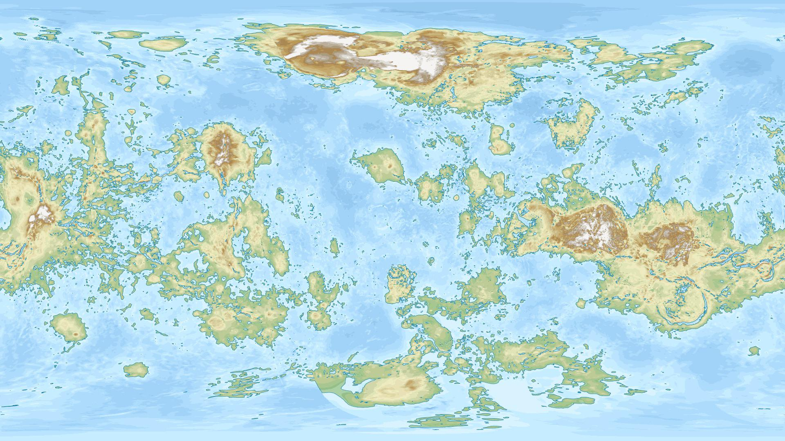
Oceanum spans the entire world. Although the winds are comparitively mild at sea level compared to the tempests at altitude, they gather force for thousands of miles, and along with the tremendous ocean-crossing waves, make sailing upon the surface a hazardous affair. The skies above Oceanum are often no better, with great turbulent masses of clouds tossing even the largest Castela about. The only regular travelers across Oceanus are the mysterious Submersible Urbs.
Climate
The air is thicker, and the climate is hot and wet during Summerday, and cold and wet at Winternight.
Autumnset and Springrise are the most temperate, pleasant climes.
Winds are gentle to non-existent in the plains, increasingly stronger with higher altitudes. When the air smells rotten, becomes extremely dry, and turns greenish-yellow, almost everything finds shelter from the Acid Rains.
Weather by season can be generated from Donjon's Random Weather Generator.
Flora and Fauna
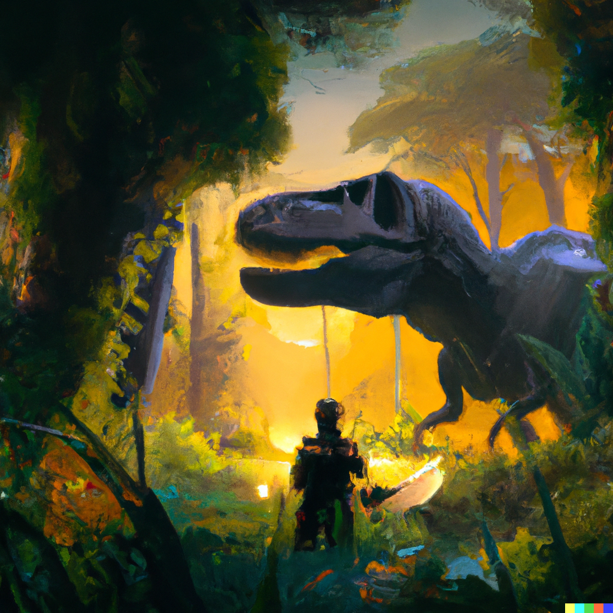
There is a tremendous variety of flora and fauna. Land animals tend towards gigantism, and Oceanus contains vast denizens in its mysterious depths. Tremendous flocks of avian and other creatures stretch for miles and continously wheel about the skies, often unseen through the Enclouding but discerned by their tremendous racket. Plants and Animals both have strange and mysterious abilities, and are often harvested or hunted for their magic.
The jungles of Ishtar resemble the Pacific Northwest, with giant colonies of Sequoias that grow on the plateaus and mountain slopes. The jungles of Aphrodite have quintuple canopies of rubbery and flexible plants which die or go dormant during Autumnset and Winternight, only to grow again during Springrise and Summerday.
Dragons
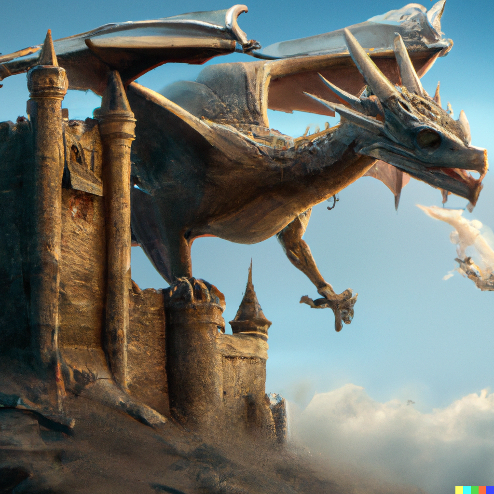
The apex predator of the skies are the Dracos; huge, intelligent, flying, and enigmatic. They winter in their accustomed lairs and emerge in Spring, dining upon the vast herds and other denizens.
Dracos covet Artifacts and precious metals, especially gold and platinum, as well as items worked in those metals. Many an Elf, Dwarf, or Gnome have successfully bargained for their lives with cunningly wrought jewelry.
They are few in number but terrifying to behold.
Fey
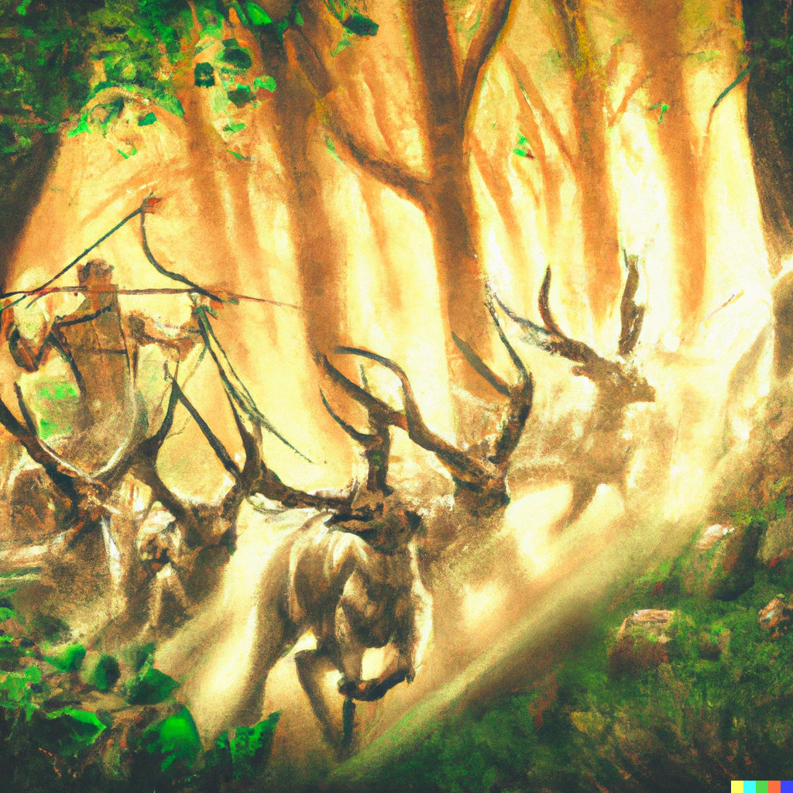
The Fey are a group of ancient, powerful, other-worldly Beings that left their mark upon the world and races of Mundus. Much speculation but little fact surrounds them. Some Barbaria worship them.
Some Fey live upon Mundus, entering and leaving during Springrise.
Old Ones
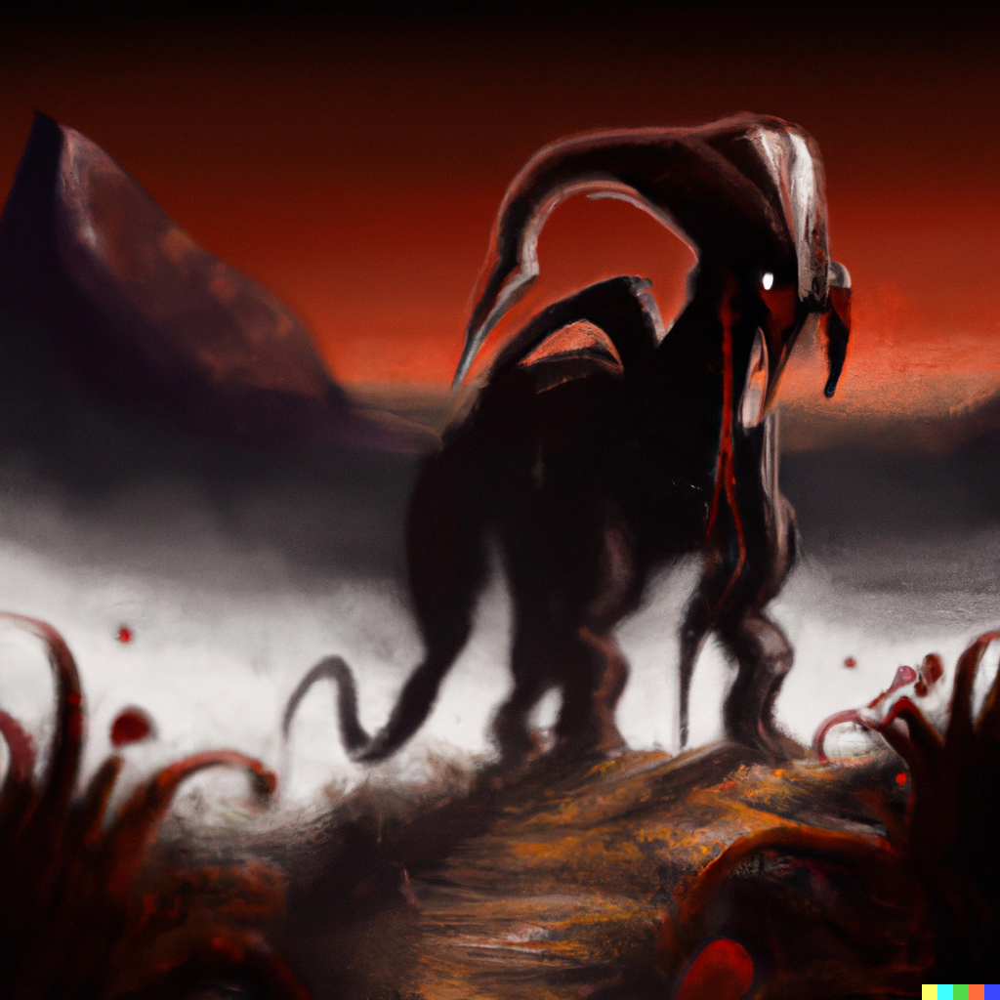
The Old Ones are a group of utterly inimical Beings that seem to have little relationship to the natural order of things.
Near them, the laws of Nature and Magic become warped and hostile to anything nearby, which are often twisted to accomodate this outre existence.
They often enter or leave Mundus during Autumnset, when paths to The Shadowfell lie open.
Other races also arrive via The Shadowfell.
Population
The peoples of Mundus are often categorized by Magi as Barbaria and Populi.
Barbaria live a nomad existence, following (and sometimes tending) the vast herds which provide sustenance and shelter.
Populi live in fixed shelters (e.g. the great Mines) or roving techno-magical constructions (Urbs and Castelas).
Barbaria
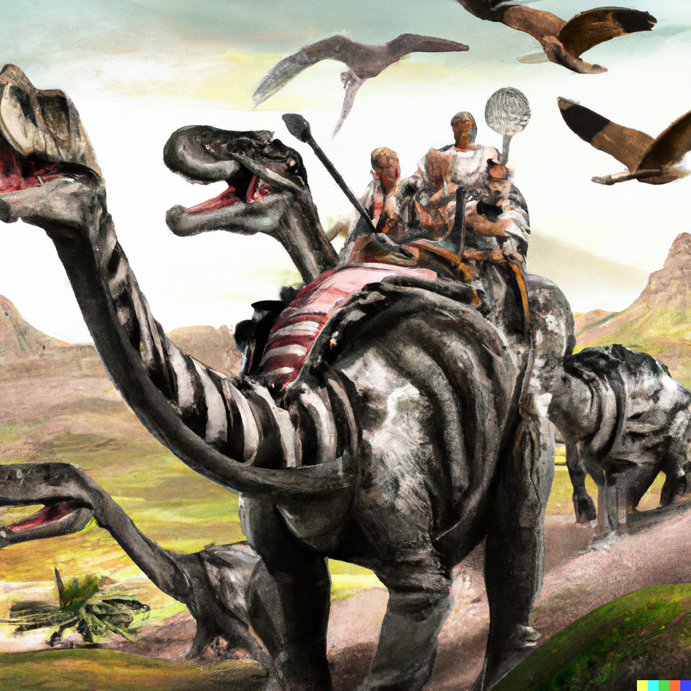
An uncounted variety of intelligent, tool-using races live in or under the skies, seas, and jungles of Mundus. They often war and trade with the Populi.
- Aarakocra
- Aasimar
- Bugbear
- Deep Gnomes
- Duergar
- Firbolg
- Goblin
- Goliath
- Hobgoblin
- Lizardfolk
- Minotaur
- Orc
- Sea Elves
- Shifter
- Tabaxi
Populi
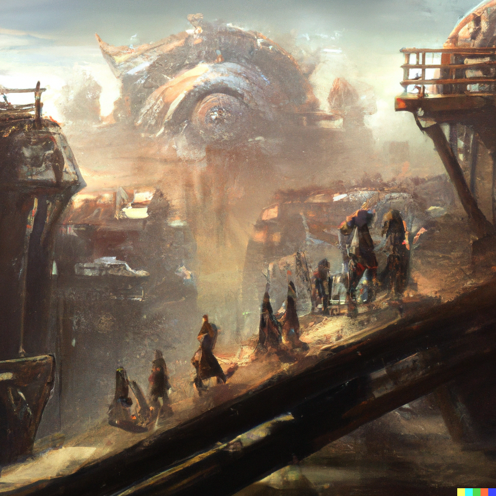
The land and skies are rife with predators natural and otherwise that, in addition to the hazardous weather, dictates that the Populi live in sturdy, defensible, and sometimes mobile Artifacts of unknown design.
The distinction between Barbaria and Populi is often a matter of debate between Magi, but the following are the most commonly accepted members.
Dragonborn
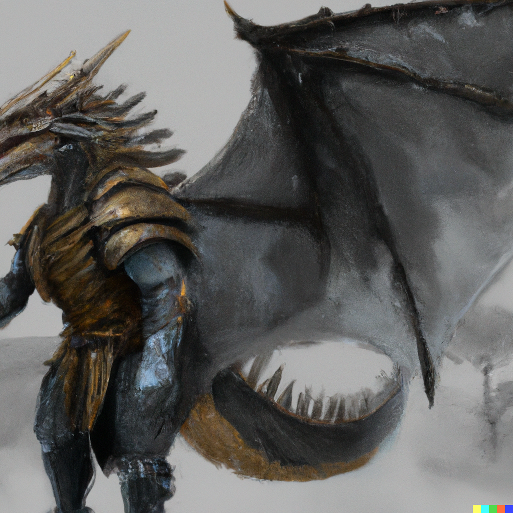
The Dragon-born are a mysterious and sundered people, found living in small conclaves amongst the Elves, Humans, Dwarves, and sometimes Halflings.
Any equipment they have, excepting magic items, must be specially made for their anatomy.
Their relation to the mighty Dracos is a matter of much speculation but little knowledge.
Dwarves
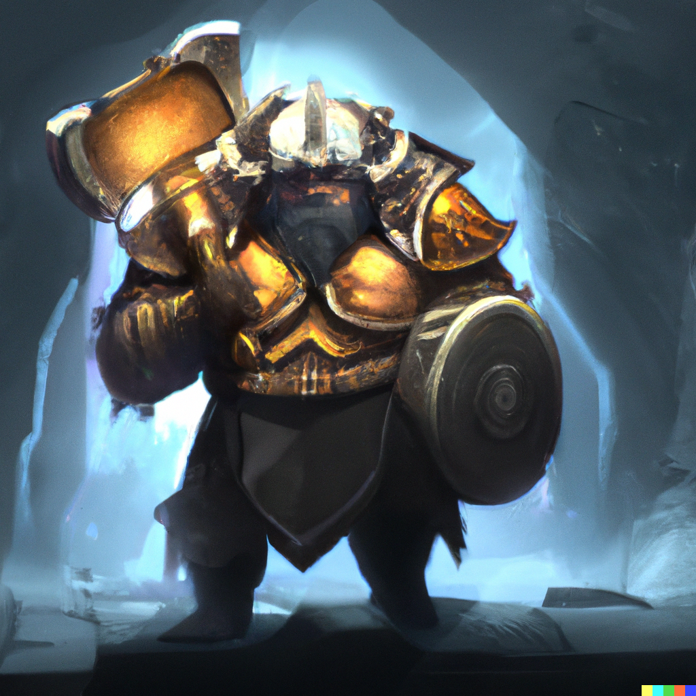
Dwarves live in the tunnels surrounding the vast open Mines, which produce metals and other substances for trade with the Human Urbs and Elven Castelas.
They dislike Magic and are especially resistant to it.
Their captial city is hidden above the clouds in the high peaks of Maxwell.
Elves
The Elves are a long-lived race that consider themselves the masters of Mundus. There are several species of Elves and they seem to be highly adapted to life wherever they find themselves.
-
The Sky Elves commune with the Fey and live in the Castelas. Their great Capital sits aloft over the continent of Aphrodite. They have foldable bat-wings from wrist to ankle with which they can glide great distances, and are resistant to Acid.
-
The Wood Elves live in communities made from the gigantic Sequoias of Ishtar. They guard their forests jealously, and like their High Elf cousins, posses gliding membranes. They appear to have lost their resistance to Acid, but are instead resistant to a great many natural toxins.
-
The Sea Elves live in Oceanus and can breathe underwater. Their wings are thicker and allow them to swim effortlessly. They are resistant to Cold.
-
The Dark Elves live deep underground, and are in constant conflict with their other kin. They do not have wings, but can instead produce spiderwebs. They are resistant to the toxins of the Underdark.
Half-Elves
Half-Elves are usualy cast out from Elven society, and instead dwell amongst Humans.
Half-Orcs
Half-Orcs, like Half-Elves, tend to be found in the company of Humans, especially Barbarians.
Halflings
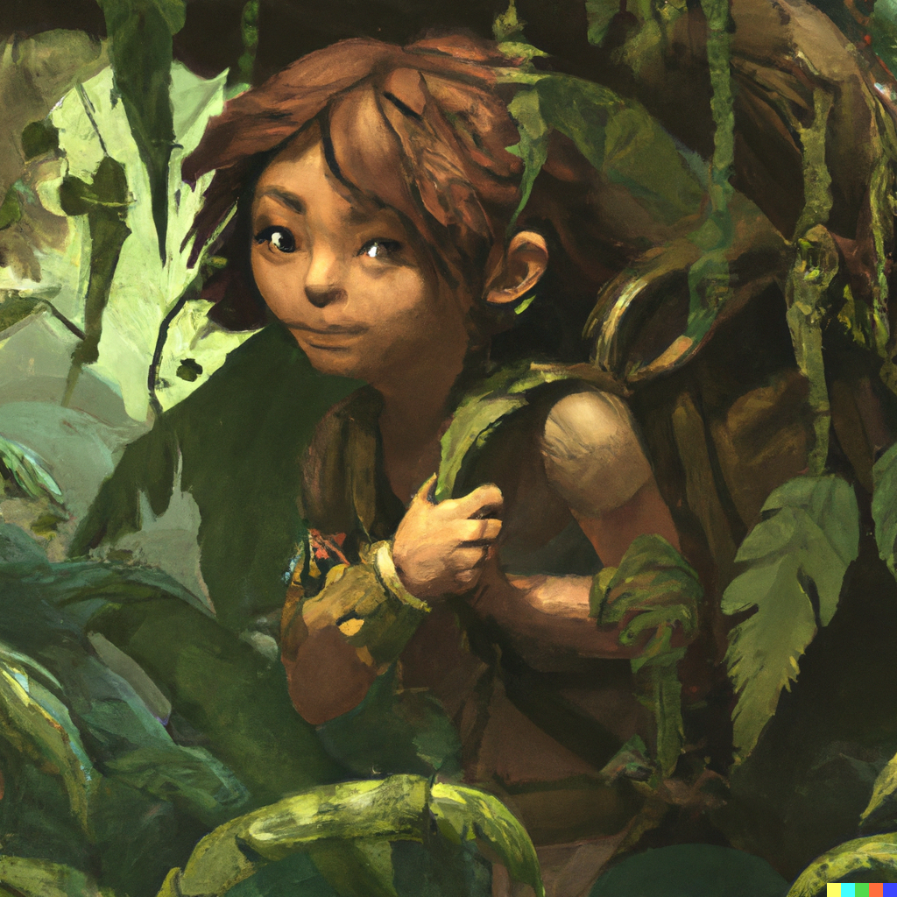
Halflings live in the jungles in cleverly concealed homes and burrows. They have no known Capital.
They spend their whole lives hiding from predators are are quite good at it.
Trade with Halflings is extremely valuable for the exotic flora and fauna they produce with mysterious healing and magical properties.
Humans
Humans come in the widest variety of shapes, colors, and sizes. They tend towards two types:
- Civilized Humans live in the Urbs, ruled by the Magisterium, which communes with their particular Urb and guards their secrets jealously. Each Urb is a society to itself and various Urban Leagues have risen and fallen throughout human history.
- The Barbarians live on the open plains, tending vast herds on their giant Thunderbeasts. Each tribe is a society unto its own, warring, trading, or both with other tribes and, occasionally, Civilized Humans. They sometimes exchange food and exotic items for Artifacts produced by Civilization.
Gnomes
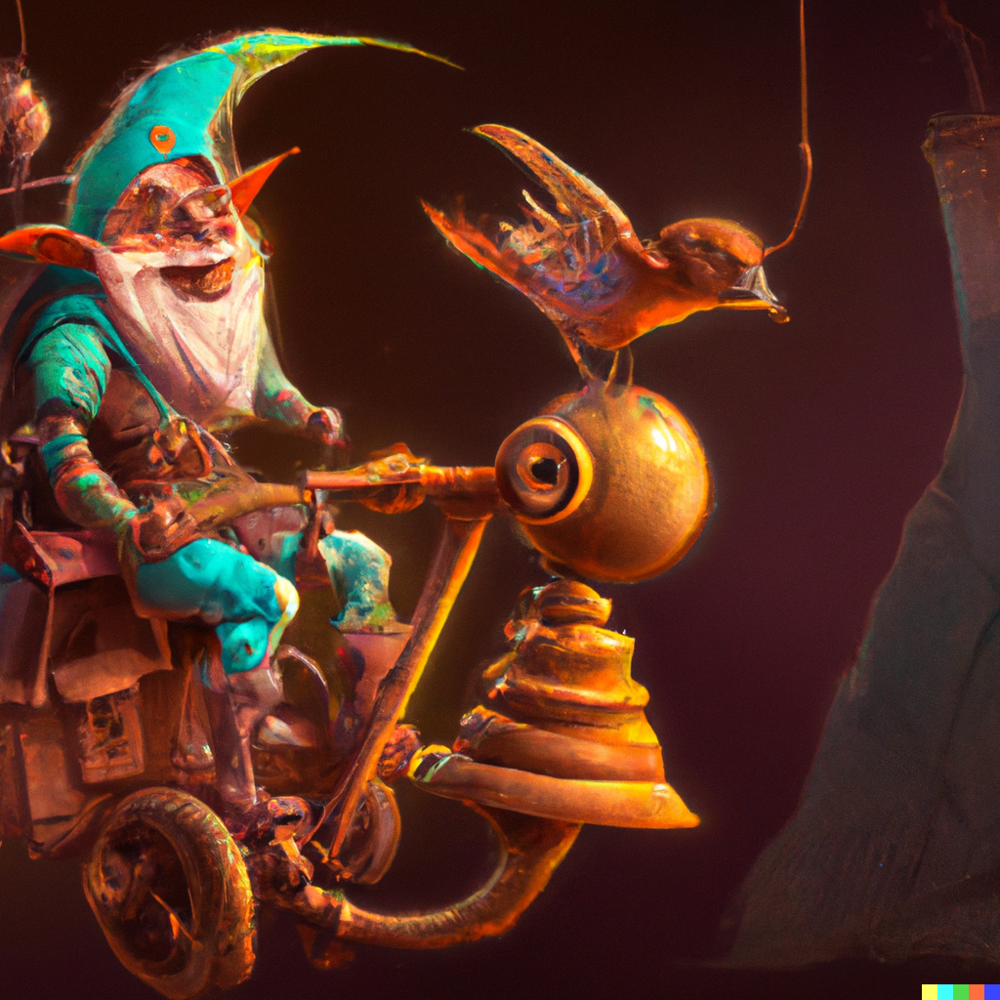
Gnomes often live near the same Mines as the Dwarves.
Unlike the Dwarves, Gnomes have an affinity for magic and are rumored, like the Elves, to be Touched by the Fey.
It is rumored they have their own Capital in Lada.
Tiefling
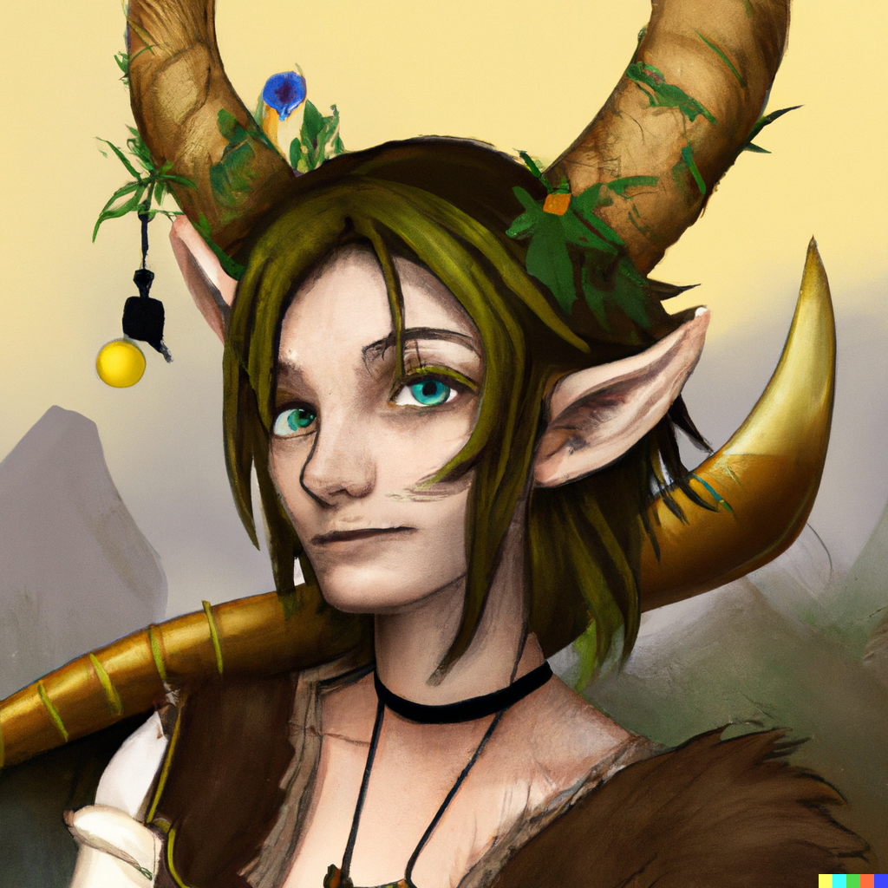
Tiefling are Human crossed with strange bloodlines.
They have few common traits or characteristics, even when compared amongst themselves.
Even amoungs the most tolerant Human societies, they are viewed with suspicion.
However, the exploits of certain Tiefling heroes have saved Neverwinter and Waterdeep in the past, and on the basis of that acclaim Tieflings have been accepted into society, especially amongst the lower classes.
Tieflings have no known social structure of their own -- at least, on Mundus.
Civilization
Civilization on Mundus is situated in the Dwarven Mines, Human Urbs, and Elven Castelas.
The Halfling communities and Wood Elven forests are also considered as part of the Civilized world, although they are extremely difficult to find even with an explicit invitation.
Mines
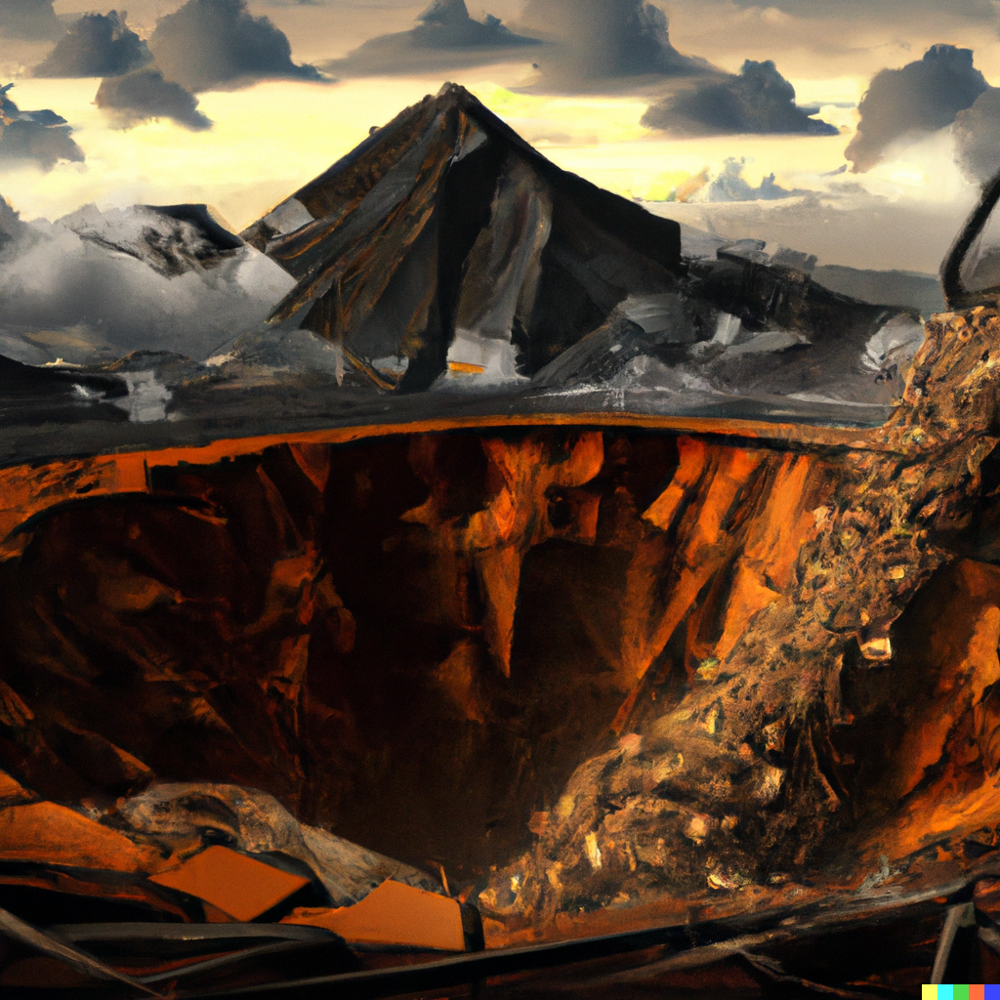
The surface of Mundus is dotted with enormous, open-air mines miles across and many more deep.
Gigantic tracks have ground out all flora surrounding these vast pits, and many Urbs make yearly voyages.
Sometimes these Urbs will winter next to the Mine for mutual protection.
Urbs
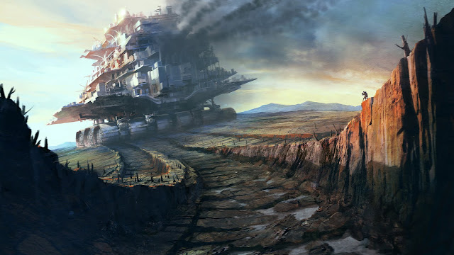
Gigantic cities of metal which rove the land, and sometimes Oceanus, the Urbs ingest great quantities of ore and other substances, often from Mines, which they can manufacture into Artifacts.
These manufacturing processes seem intrinsic to the Urb itself; the Artificers Guild seem mainly to ensure continued functionality of the machinery.
Some whisper the Artificers themselves have little understanding of the inner workings of the Urbs, but such rumors are firmly put down by the Protectors of the Magisterium.
Urbs range in size from merely gigantic rovers to mile-long structures with as many as seven tiers. The typical Urb moves at a stately walking pace, and the clanking of their gigantic treads can be heard for miles.
Inhabitants usually live in sturdy wooden and stone structures that are built upon the metal foundations of the Urb, which produces anchor points upon demand by an Artificer. Some say these Urban folk have a near-permanent deafened condition.
Castelas
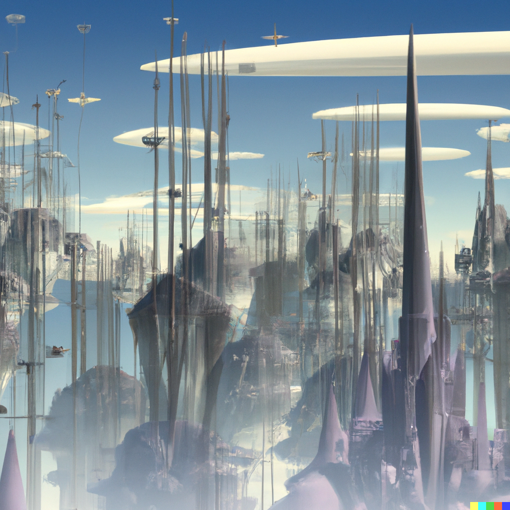
Artifacts that are vast flying cities of metal which often follow the Perpetual Spring.
High Elves can glide the winds, but use Airships to travel long distances.
Humans and other races can often be found in the Castelas, but almost never in the higher levels reserved for the Nobility.
Artifacts
A great variety of Artifacts can be found on Mundus. The most well-known include:
- Stonehenge
- The Eye of Sol
- The Sky Tower of Ovda
- The Maxwell Forge
- The Marianus Submersible
- The Smiting Hammer
- The Oracle Stones
- The Sword of Mourning
- Baba Yaga's Hut
- The Orbs of Dragonkind
- The Chaos Blade
- Spellbreaker
- The Arc Armor
- The Vortex feather
- The Book of Exalted Deeds
- The Book of Vile Deeds
Less-famous artifacts abound and are in use by the heroes, villains, and leaders in the various societies.
Stonehenge
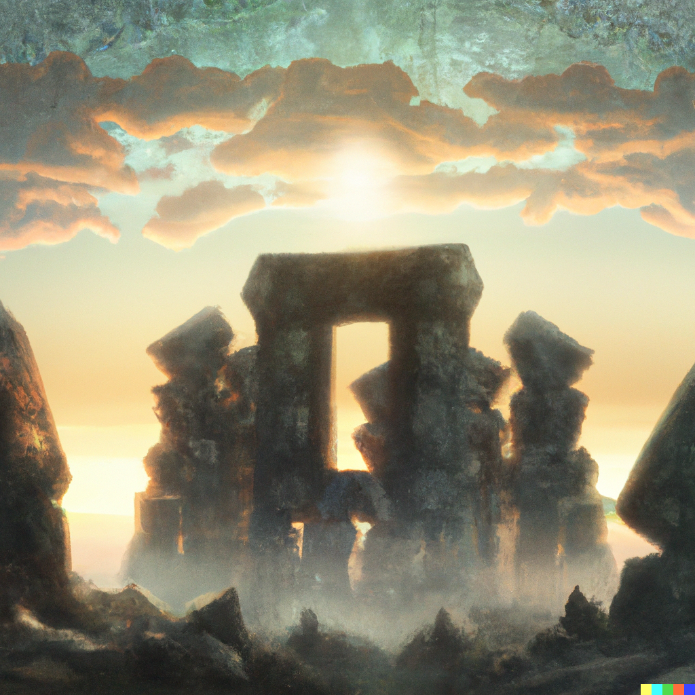
Amidst the rolling hills of green,
Where ancient mysteries lie unseen,
Stands a circle of stones so grand,
A monument of an unknown hand.
Stonehenge, they call it, a wonder of old,
A place where stories and legends unfold,
Whispers of magic, of gods and kings,
Of druids, and rituals, and sacred things.
In the hours of Springrise, a new life begins,
As nature awakens from her winterly sins,
And Stonehenge, too, seems to come alive,
As if a resurrection of times gone by.
The sun rises high, and the air is crisp,
The stones stand tall, as if in a mystic tryst,
The morning dew glistens on the green,
As if a sign of a sacred dream.
Amidst this magic, a sense of hope,
Of new beginnings, a way to cope,
As if the stones themselves proclaim,
The promise of life, the end of the game.
So, on this day of resurrection and spring,
Let us gather at Stonehenge and sing,
Songs of joy, of hope, and of love,
And let the stones bless us from above.
Starting
Here is some information to help you create a character for play in Mundus.
Level
Level 1, or minimum XP for Level - 1 from the current party average (currently 4.5).
Ability scores
Generate 6 Ability Goups, choose your favorite. DnDBeyond can do this electronically.
There are two additional Ability Scores, Honor and Sanity. They are based off of Charisma and Wisdom respectively, and thereafter are independent.
Ability Groups
Roll 4d6 for each characteristic, take best 3 dice, arrange scores as desired.
Races
Classes
Equipment
Magic
Hero Dice
At 5th level, characters gain Hero Dice equal to half their level. Hero Dice once used are gone, but the character gains a new set upon achieving a new level.
Hero Dice may be added to an attack roll, ability check, or saving throw after the roll is made, but before the results are applied.
Additionally, Hero Dice may be used to turn a failed Death Saving Throw into a success.
The type of Hero Dice depends upon the level of the character, according to the following table:
| Level Range | Hero Dice Type |
|---|---|
| 5 - 10 | d6 |
| 11 - 15 | d8 |
| 16 - 18 | d10 |
| 19 - 20 | d12 |
Races
Game statistics for the various races, summarized from the Player's Handbook and Mordenkainen's Monsters of the Multiverse.
| Race | Traits |
|---|---|
| Aarakocra | |
| Aasimar | |
| Bugbear | |
| Centaurs | |
| Changelings | |
| Deep Gnomes | |
| Duergar | |
| Dragonborn | +2 Str, +1 Cha, Draconic Ancestry |
| Dwarf | +2 Str, +2 Con, Darkvision, Resistances: Poison and Magic, Proficiencies: Axe, Hammer, Artisan Tools |
| Eladrin | |
| Elf, Sky | +2 Dex, +1 Int, Gliding Wings, Extra Cantrip, Darkvision, Resistances: Acid, Charm/Sleep, Proficiencies: Bow, Swords |
| Elf, Wood | +2 Dex, +1 Wis, Gliding Wings, Extra Cantrip, Darkvision, Resistances: Charm/Sleep, Poison, Proficiencies: Bow, Swords |
| Elf, Sea | +2 Dex, +1 Con, Swimming Wings, Extra Cantrip, Water Breathing, Resistances: Cold, Charm/Sleep, Proficiencies: Net, Trident, Crossbow |
| Elf, Dark | +2 Dex, +1 Cha, Web spell, Dancing Lights, Faeri Fire, Darkness, Superior Darkvision, Resistances: Charm/Sleep, Poison, Proficiencies: Rapiers, Shortswords, Hand Crossbows |
| Fairy | |
| Firbolg | |
| Goblin | |
| Goliath | |
| Gnome, Rock | +2 Int, +1 Con, Darkvision, Artificers Lore, Tinker |
| Half-Elf | +2 Cha, +1 on two other abilities, Darkvision, Resistances: Charm/Sleep, Proficiences: Two of Choice |
| Half-Orc | +2 Str, +1 Con, Darkvision, Menacing, Relentless Endurance, Savage Attacks |
| Halfling, Lightfoot | +2 Dex, +1 Cha, Lucky, Brave, Nimbleness, Stealth |
| Harengon | |
| Hobgoblin | |
| Human | +1 on four Abilities, Feats: One of Choice, Proficiencies: One of Choice |
| Kenku | |
| Lizardfolk | |
| Minotaur | |
| Orc | |
| Satyr | |
| Shadar-Kai | |
| Shifter | |
| Tabaxi | |
| Tiefling | +1 Int, +2 Cha, Darkvision, Resistances: Fire, Infernal legacy |
| Yuan-Ti |
Feats
Some races have racially-specific Feats:
-
Dragonborn: Dragon Fear
-
Dwarf: Dwarven Fortitude
-
Dark Elf: Drow High Magic
-
Wood Elf: Wood Elf Magic
-
Half-Orc: Orcish Fury
-
Halfling: Second Chance
-
Human: Prodigy
-
Gnome: Fade Away
-
Tiefling: Infernal Constitution
Classes
The available classes are:
- Artificer
- Barbarian
- All Primal Paths
- Bard
- All Bard Colleges
- Cleric
- Druid
- All Druid Circles
- Fighter
- All Martial Archetypes
- Monk
- All Monastic Traditions
- Paladin
- All Oaths
- Ranger
- All Ranger Archetypes
- Rogue
- All Roguish Archetypes
- Sorcerer
- All Sorcerous Origins
- Warlock
- The Archfey or The Great Old One
- Wizard
- All Arcane Traditions
Artificer
Artificers are described in Tasha's Cauldron of Everything.
Most Artificers on Mundus belong to the Artificers Guild. Members of the Artificers' Guild speak to each other in a highly technical language that sounds like Common but is full of outlandish words with little meaning to outsiders. Artificers' Guild members can recognize each other via this Artificers' Cant.
As Artificers are present in all centers of Civilization, they are highly valued and protected by the Artificers' Guild (as long as they are members of good standing). Naturally, the Artificers' Guild frowns upon non-Guild practicioners, but such folk are in demand and do quite well trading or living amongst the Barbaria.
Hit Points
Hit Dice: 1d8 per Artificer level
Hit Points at 1st Level: 8 + Constitution modifier
Hit Points at Higher Levels: 1d8 (or 5) + Constitution modifier per level after 1st
Proficiencies
Armor: Light armor, medium armor, shields
Weapons: Simple weapons, Firearms
Tools: Thieves' Tools, Tinkers' Tools, one type of Artisans' Tools
Saving Throws: Intelligence, Constitution
Skills: Choose two from Arcana, History, Investigation, Medicine, Nature, Perception, Sleight of Hand
Spellcasting
Spells "cast" by an Artificer involve wonders and outlandish inventions, and either Thieves' Tools or Artisans' Tools are always required as a Material component to the spell. Once Infuse Item is attained at 2nd level, any item bearing an Infusion may be used as a spellcasting focus.
Intelligence is used as the Artificers spellcasting ability.
Starting Equipment
- Any 2 simple weapons
- 1 Musket or 2 Pistols with 20 pieces of ammunition
- Studded Leather armor or Scale Mail
- Tinkers' Tools
- Thieves' Tools
- Dungeoneers' Pack
Playtest Materials
Druid and Paladin Playtest materials
Equipment
In addition to the standard Equipment list, a variety of exotic items are in common use on Mundus.
Firearms
Image Credit: Wikimedia Commons
The most common firearms found on Mundus are Muskets and Pistols, but other types have been discovered.
Elves disdain the use of Firearms, but Artificers in the Urbs and Mines commonly manufacture them, with the Protectors and Iron Guard being notable users throughout their ranks.
Common Types
| Type | Cost | Damage | Weight | Properties |
|---|---|---|---|---|
| Pistol | 250 gp | 2d8 piercing | 3 lbs. | Ammunition (range 30/90), loading |
| Quattour | 1000 gp | 2d6 piercing per barrel | 5 lbs. | Ammunition (range 30/90), reload (4 shots) |
| Musket | 500 gp | 2d10 piercing | 7 lbs. | Ammunition (range 40/120), loading, two-handed |
| Shotgun | 750 gp | 3d6 bludgeoning per barrel | 10 lbs. | Ammunition (range 30/90), reload (2 shots), two-handed, |
| Sept | 1500 gp | 2d8 piercing per barrel | 13 lbs. | Ammunition (range 40/120), reload (7 shots), two-handed |
| Bullets | 3 gp | - | 1 lb. | 10 rounds + powder |
| Shot | 2 gp | - | 1 lb. | 10 shots + powder |
Use
A Pistol or Musket discharges one lead ball per barrel.
Shotguns discharge a number of pellets per barrel.
The Quattour and Sept may discharge all barrels in a single round. In this instance, the firer receives Disadvantage unless they possess the Gunner Feat. Success produces d4/d6 hits.
Reloading
Firearms require 10 rounds to reload per barrel. A person with Proficiency in Firearms can reload a barrel in 5 rounds. Someone with the Gunner Feat can reload a barrel as an Action and fire as a Bonus Action.
An Artificer that Infuses a Firearm with Repeating Shot can reload and fire one barrel per round. The ammunition is assembled from components in the possession of the Artificer (e.g. ball and powder).
Armor Effects
Heavy Armor (or it's equivalent) provides Damage Resistance against Firearms listed in the table above.
Medium Armor (or it's equivalent) provides Damage Resistance against the Shotgun in the table above.
Conveyances
There are a variety of ways to get around, starting with animal-based:
- Horse
- Thunder Beast
- Hippogriff
- Pegasus
- Manta Ray
There is also techno-magical transportation:
- Horseless carriage
- Strider
- Crawler
- Airship
- Submarine
Magical portals, temporary or otherwise, are also known to exist.
And of course, Urbs and Castelas are conveyances in their own right.
Spellcasting
To cast a spell, a character requires three things:
Spell Knowledge and Preparation
Arcane Tricksters, Artificers, Bards, Eldritch Knights, Rangers, Sorcerers, Warlocks, and Wizards must know and/or prepare spell formula to cast spells.
These formulae take different forms, depending upon the discipline of the spell-caster, and usually do not translate across classes.
Example: the spell formula for Magic Missile written by Wizards is different from the Sorcerers Magic Missile.
Some classes, like the Artificer, can change known spells by tinkering with their spellcasting focus. Other classes, like Wizards, write down formulae in their spellbooks. The number of known spells can exceed the number of prepared spells.
Arcane Tricksters and Wizards must prepare spells from their list of known spells. For all other classes, there is no distinction between known spells and prepared spells.
Only prepared spells can be cast.
Clerics, Druids, Sorcerers, and Wizards can prepare a number of spells equal to their Spellcasting Attribute bonus + class level.
Example: A 5th-level Wizard with an Intelligence of 16 can prepare 8 spells.
Artificers and Paladins can prepare a number of spells equal to their Spellcasting Attribute bonus + half their class level, rounded down.
Example: A 3rd-level Paladin with a Charisma of 17 can prepare 4 spells.
Arcane Tricksters, Bards, Eldritch Knights, Rangers, and Warlocks have a fixed number of prepared spells depending on their level.
Example: A 5th-level Warlock can prepare 6 spells, regardless of Charisma.
Spell Level
Second, the character must be able to channel magical ability of that level.
Example: a 5th-level Wizard can channel up to 3rd-level spells.
Mana
Lastly, the character must have available Mana.
Using Mana often requires Verbal, Somatic, and/or Material components, which are consumed when Mana is expended. If these words, gestures, or materials are interrupted or interfered with, the spell fizzles and the Mana is lost.
Environmental Effects
Spells which use an Attack Roll normally generate Critical Hits on a roll of 20.
Example: Call Lightning does not trigger Critical Hits, because it has a Saving Throw.
Certain spells have enhanced effects in certain environments, as follows:
A spell with a damage type matching the environment generates a Critical Hit on a 19 or 20 Attack Roll. Likewise, Saving Throws are at Disadvantage.
| Damage Type | Environment |
|---|---|
| Radiant | Summerday |
| Necrotic | Winternight |
| Acid | Acid Rain |
| Cold | Blizzard |
| Lightning | Thunderstorm |
| Thunder | Thunderstorm |
| Fire | Active volcano |
| Force | The Arch is visible |
Example: A roll of 19 with a Javelin of Lightning during a Thunderstorm triggers a Critical Hit on the target for 2d6 Piercing + 8d6 Lightning. The creatures between the thrower and the target do not receive Critical Hits, but they make a Dexterity Save for half damage at Disadvantage.
Wild Magic Sorcerers trigger a Wild Magic Surge on a spellcasting Attack Roll of 20.
Example: A Wild Magic Sorcerer rolls a 20 to Critical Hit a target with a Ray of Enfeeblement during Winternight. He also triggers a Wild Magic Surge.
Mana
Mana, regardless of provenance, powers magic, and spellcasters use it to cast spells.
To determine how much Mana is available, for each Spell Slot multiply by Spell Level and add up the total. This is summarized in the tables below.1
Example: a 4th level Wizard has 10 Mana (4 1st-level slots x 1 + 3 2nd-level slots x 2 = 10).
Spells cost Mana equal to their level, plus any modifiers to that level.
Example: Fireball (a 3rd-level spell) cast at 5th-level with an additional 2d6 damage (10d6 total) costs 5 Mana.
Cantrips and other At Will abilities do not consume Mana directly, as they are innate to the Being. Certain classes also have spells that are Always Prepared and which do not count against Spell Slots. In this case, Always Prepared spells are added to both the Known Spells list and the Prepared Spells list, and their Spell Levels are added to the Mana for the character.
Example: A 5th level Druid in the Circle of the Forest has 26 Mana. Barkskin, Spider Climb, Call Lightning, and Plant Growth are always prepared and may be cast if the Druid has sufficient Mana.
Ritual Spells require Mana equal to their level available to begin the ritual, but the spellcaster attunes the spell to the Mana of the environment. Thus, it does not deplete the spellcaster's Mana directly.
Example: Identify requires, but does not use, 1 Mana to start the ritual.
Bard, Cleric, Druid, Sorcerer, Wizard
| Level | Cantrips2 | Max Spell Level | Mana3 |
|---|---|---|---|
| 1st | 2 | 1st | 2 |
| 2nd | 2 | 1st | 3 |
| 3rd | 2 | 2nd | 8 |
| 4th | 3 | 2nd | 10 |
| 5th | 3 | 3rd | 16 |
| 6th | 3 | 3rd | 19 |
| 7th | 3 | 4th | 23 |
| 8th | 3 | 4th | 27 |
| 9th | 3 | 5th | 36 |
| 10th | 4 | 5th | 41 |
| 11th | 4 | 6th | 47 |
| 12th | 4 | 6th | 50 |
| 13th | 4 | 7th | 54 |
| 14th | 4 | 7th | 57 |
| 15th | 4 | 8th | 62 |
| 16th | 4 | 8th | 67 |
| 17th | 4 | 9th | 71 |
| 18th | 4 | 9th | 76 |
| 19th | 4 | 9th | 82 |
| 20th | 4 | 9th | 89 |
Artificer, Paladin, Ranger
| Level | Max Spell Level | Mana |
|---|---|---|
| 1st | None4 | 0 |
| 2nd | 1st | 2 |
| 3rd | 1st | 3 |
| 4th | 1st | 5 |
| 5th | 2nd | 8 |
| 6th | 2nd | 9 |
| 7th | 2nd | 10 |
| 8th | 2nd | 12 |
| 9th | 3rd | 16 |
| 10th | 3rd | 17 |
| 11th | 3rd | 19 |
| 12th | 3rd | 20 |
| 13th | 4th | 23 |
| 14th | 4th | 25 |
| 15th | 4th | 27 |
| 16th | 4th | 30 |
| 17th | 5th | 36 |
| 18th | 5th | 39 |
| 19th | 5th | 41 |
| 20th | 5th | 44 |
Warlock
| Level | Cantrips | Spells | Invocations | Max Spell Level | Mana |
|---|---|---|---|---|---|
| 1st | 2 | 2 | None | 1st | 1 |
| 2nd | 2 | 3 | 2 | 1st | 2 |
| 3rd | 2 | 4 | 2 | 2nd | 4 |
| 4th | 3 | 5 | 2 | 2nd | 5 |
| 5th | 3 | 6 | 3 | 3rd | 6 |
| 6th | 3 | 7 | 3 | 3rd | 7 |
| 7th | 3 | 8 | 4 | 4th | 8 |
| 8th | 3 | 9 | 4 | 4th | 9 |
| 9th | 3 | 10 | 5 | 5th | 10 |
| 10th | 4 | 10 | 5 | 5th | 15 |
| 11th | 4 | 11 | 5 | 6th5 | 21 |
| 12th | 4 | 11 | 6 | 6th | 25 |
| 13th | 4 | 12 | 6 | 7th5 | 28 |
| 14th | 4 | 12 | 6 | 7th | 30 |
| 15th | 4 | 13 | 7 | 8th5 | 36 |
| 16th | 4 | 13 | 7 | 8th | 40 |
| 17th | 4 | 14 | 7 | 9th5 | 45 |
| 18th | 4 | 14 | 8 | 9th | 46 |
| 19th | 4 | 15 | 8 | 9th | 47 |
| 20th | 4 | 15 | 8 | 9th | 48 |
Eldritch Knight, Arcane Trickster
| Level | Cantrips6 | Spells | Max Spell Level | Mana |
|---|---|---|---|---|
| 3rd | 2 | 3 | 1st | 2 |
| 4th | 2 | 4 | 2nd | 3 |
| 5th | 2 | 4 | 2nd | 4 |
| 6th | 2 | 4 | 2nd | 5 |
| 7th | 2 | 5 | 2nd | 6 |
| 8th | 2 | 6 | 2nd | 7 |
| 9th | 2 | 6 | 2nd | 8 |
| 10th | 3 | 7 | 2nd | 10 |
| 11th | 3 | 8 | 2nd | 11 |
| 12th | 3 | 8 | 2nd | 12 |
| 13th | 3 | 9 | 3rd | 16 |
| 14th | 3 | 10 | 3rd | 17 |
| 15th | 3 | 10 | 3rd | 18 |
| 16th | 3 | 11 | 3rd | 19 |
| 17th | 3 | 11 | 3rd | 20 |
| 18th | 3 | 11 | 3rd | 21 |
| 19th | 3 | 12 | 4th | 22 |
| 20th | 3 | 13 | 4th | 23 |
The tables gives slightly more spell points than a straight conversion, to provide increasing Mana per level.
Clerics and Wizards have +1 Cantrips, Sorcerers have +2 Cantrips.
Sorcerers get Metamagic Mana equal to their level, which can be used for Metamagic or Mana.
Artificers know Cantrips equal to Druids, and at 1st level know 1st level spells with 2 Mana.
From the Mystic Arcanum
Arcane Trickster has +1 Cantrips
Magic Items
Adamantium
Black and non-metallic, Adamantium is the hardest known substance on Mundus. Adamantium seems to drink in the light, and is non-reactive to both fire and acid. Adamantium is highly prized for it's lightness and durability, and can only be worked by Artificers.
Weapons made of Adamantium cause Critical Hits on a roll of 19 or 20.
Armor made of Adamantium is half the weight, and the wearer is immune to Critical Hits.
Overview
The first adventuring group based out of Neverwinter.
First Session
Goblins on the Triboar Trail
Springrise
Dramatis Personae
- Benjamin, a 1st-level Elf Ranger
- CoralKing, a 1st-level Gnome Monk
- Geral Bryn, a 1st-level Human Fighter
- Orky, a 1st-level Half-Elf Paladin
- Steve, a 1st-level Halfling Rogue
- Tasbros, a 1st-level Elf Sorcerer
- Tysnera, a 1st-level Elf Wizard
- Wulrif, a 1st-level Human Warlock

Spring rises over the Sword Coast as Neverwinter makes its way along the High Road to spend Summerday at Biscayne Bay, awaiting the arrival of Waterdeep, the largest known Submersible Urb.
The Magisterium declares Springrise as the majority of the inhabitants of Neverwinter exchange their musty and clamorous dwellings for the warmth of the surrounding lands. Gaily colored tents and trade booths dot the surrounding countryside, patrolled by the Protectorate astride their clanking beasts.
A Dwarf named Gundren Rockseeker asks you to bring a wagonload of provisions to the Summerday settlement of Phandalin, 20 hours travel Southwest of your current location. Gundren was clearly excited and more than a little secretive about his reasons for the trip, saying only that he and his brothers had found "something big", and that he'd pay you ten gold pieces each to escort his supplies to Barthen's Provisions, a trading post in Phandalin. He then set out ahead of you on horse, along with a warrior escort named Sildar Hallwinter, claiming he needed to arrive early to "take care of business". You've spent the last 8 hours following the broad High Road South, and you've just recently veered east along the Triboar Trail. You've encountered no trouble so far, but the wilderness is always dangerous and full of predators.
Character introductions were made.
The party encountered two dead horses along the trail. Despite Geral's warning, the party went to investigate and were ambushed by Goblins.
Geral leapt forward to save CoralKing, Benjamin, and Wulrif and Orky's charge broke the back of Goblin resistance.
The remainder disengaged and slunk back into the woods, firing desultory arrows at Orky to no effect.
Benjamin determined the Goblins to have numbered a dozen, and they dragged someone away. Empty satchels and a map case were found near the dead horses.
300 XPs
A further 8 hours travel along the Triboar Trail, and Benjamin discovered a Goblin lair in a cave hidden in the woods a scant two bowshots from the trail. Concealed in natural surroundings, Benjamin observed the Goblins taking a bound human into the cave. From there, any other travelers along the Triboar Trail are sure to come under assault.
The party crept to the cave entrance, leaving Geral and Tysnera to guard the oxen team and wagon full of the provisions they were hired to deliver.
The party ambushed two guards at the cave entrance, and then slew three wolves just inside the cave in a filthy den.
Before they could go further, Tysnera arrived bearing the news that the wagon caravan was under attack by a foul beast.
Returning, the party encountered an Owlbear, which had dispatched Geral and was ravaging the remains of the oxen team.
The Owlbear was defeated and Geral revived from near death. The remains of four oxen were scattered amongst the beast's feeding frenzy, and Benjamin eventually retrieved the remaining four.
The party must decide what to do next.
500 XPs

Second Session
Goblins and Zombies and Wolves, Oh My!
Summerday +48 hours
Dramatis Personae
- Actias Aureus, a 1st-level Tiefling Warlock
- Benjamin, a 2nd-level Elf Ranger
- Calmul Rhoqiroth, a 1st-level Dragonkin Bard
- CoralKing, a 2nd-level Gnome Monk
- Geral Bryn, a 2nd-level Human Fighter
- Orky, a 2nd-level Half-Elf Paladin
- Skolg, a 1st-level Tiefling Rogue
- Steve, a 2nd-level Halfling Rogue
- Wulrif, a 2nd-level Human Warlock
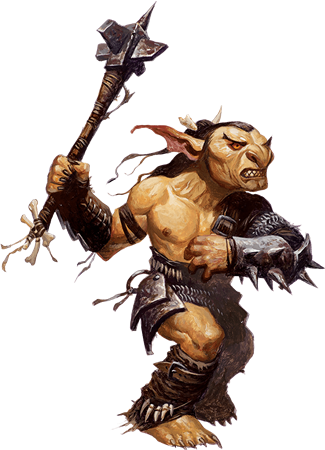
After determining that the Goblins in the cave were going to be a persistent threat until taken care of, the party decided to hide the wagon and oxen in a safe place and go back to the cave. Benjamin found a good location off the main trail for the oxen, and Wulrif cast an illusion over the wagon to hide it, with limited success.
The group set off toward the caves, only to be met by a party of a dozen Goblins attempting to ambush them again. The team succeeded in defeating the Goblin raiding party, with a few Goblins escaping back into the woods. CoralKing detected and the party avoided two traps along the trail the Goblins had set, and the party found themselves back at the mouth of the cave.
Proceeding cautiously, the party noted the chamber that had formerly held the wolves to contain little more than bloodstains. Careful investigation revealed a narrow chimney 20' or so up in the chamber, but the climb looked slick and difficult and no one risked it. Moving deeper into the cave, it again branched, going upwards into a large chamber with a wooden bridge 20' over the stream flowing down the left side of the main cave tunnel. A side branch also went upwards, but the ceiling was much lower. While the party was deciding what to do, a huge deluge of water came roaring down the main passage, washing away most of the party. A few desultory arrows came out of the darkness, but they had little effect.
The group decided to explore instead the side passage, but this time they made use of the pickaxes and ropes that many of them had been carrying. CoralKing stealthily crept up the passage, finding another group of 6 Goblins arguing and abusing a tied up human.
Turning the tides, the group blitzed into the room, taking down all of the Goblins except one, which they kept as a prisoner.
The human prisoner turned out to be Sildar Hallwinter, a retired warrior and bodyguard of Gundren Rockseeker. He relayed that they were both ambushed by a large band of Goblins with a Bugbear leader, who took Gundren someplace else.
The party turned to interrogate the captured Goblin, who revealed a number of items:
- The Bugbear's name is Klarg, and he's the leader of the band, which numbers more than two dozen. But Yeemik is second in command, and know's many things of interest to the group.
- Klarg answers to King Grol, chief of the Cragmaw tribe, who dwells in Cragmaw Castle.
- Klarg received a messenger from King Grol a few days ago. Somone named The Black Spider was paying the Cragmaws to watch for the dwarf Gundren Rockseeker, capture him, and send him and his effects (but most especially a map) back to King Grol.
- Klarg took Gundren to Cragmaw Castle. Yeemik can lead the party there.
At this point Sildar interrupts, saying he needs to get to Phandalin along with the supplies, because he needs to find out the whereabouts of his friend, Iarno Glasstaff, who went to Phandalin last Summerday to prepare the way. He offers an additional 50 gold pieces for safe escort to Phandalin.
The party agrees that they need to get Sildar and the wagon of supplies to Phandalin, and then find Gundren.
Turning south along the Triboar Trail, the party, along with Sildar and Yeemik, head towards Phandalin.
They pass another wagon that has been torn apart, bodies littered everywhere. As they approach, the bodies rise with a groan and attack.
These strange undead puff blinding clouds of ash when hit. Worse, they seem resistant to swords, arrows, and even Calmul's breath weapon. They likewise take no notice of charms or enchantments, but Orky has success with her mace, Coralking with his headbutts, and Geral with a makeshift club. Actias and Wulrif's spells likewise affect the monsters. Benjamin, Steve, and Skolg, equipped with only slashing and piercing weapons, guard Yeemik to ensure he doesn't run off in the confusion. Silmar yells out that these are "Ash Zombies".
The Ash Zombies go down very hard, but eventually they do go down.
The party stops to rest and recuperate.
600 XPs
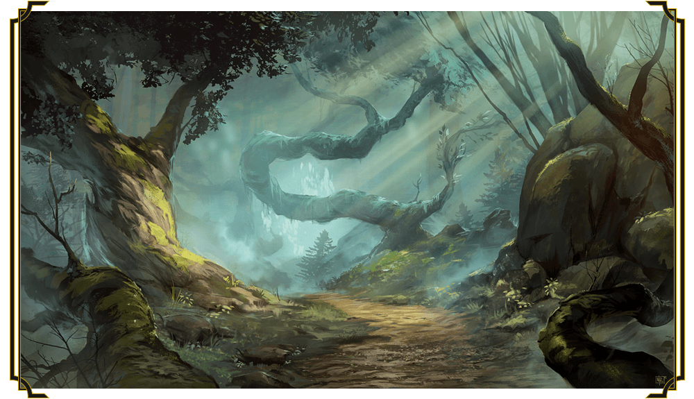
Third Session
Wildlife Problems
Summerday +80 hours
Dramatis Personae
- Actias Aureus, a 2nd-level Tiefling Warlock
- Benjamin, a 3rd-level Elf Ranger
- Calmul Rhoqiroth, a 2nd-level Dragonkin Bard
- CoralKing, a 3rd-level Gnome Monk
- Geral Bryn, a 3rd-level Human Fighter
- Orky, a 3rd-level Half-Elf Paladin
- Steve, a 3rd-level Halfling Rogue
- Tasbros, a 2nd-level Elf Sorcerer
- Tysnera, a 2nd-level Elf Wizard
- Viker, a 2nd-level Elf Druid
- Wulrif, a 3rd-level Human Warlock
The party finally makes it to Phandalin. Sildar leads the group to the Stonehill Inn, where they set about procuring lodgings. Sildar pays the party the 50 gold pieces and sets off in search of his friend, Iarno Glasstaff.
The group then drops off the supplies to Barthen's Provisions, where they get paid and briefly chat with Barthen.
Yeemik the Goblin is causing a bit of a stir, so they head to the Townmaster's Hall next, where they encounter Harbin Wester and his group of Dwarven Mercenaries. Harbin offers them the use of the jail in the basement, and after a few tense moments with the Dwarves CoralKing decides to stay with Yeemik to ensure no shenanigans.
Harbin offers a bounty of 100gp if the party will clear out the Orcs harrassing travelers on the Triboar Trail to the East. The group considers it. Geral asks where a healer might be found and Harbin replies that someone occasionally tends the Shrine of Luck.
No one is at the Shrine of Luck, so Tasbros and Tysnera decide to do their meditations there while the rest of the party rests at the Stonehill Inn.
Tysnera and Tasbros encounter the returning Sister Garaele, injured and the worse for wear. Sister Garaele is looking for Bojangle's Spellbook, and the last entity that might know it's location is Agatha the Banshee, who haunts the ruins of Conyberry. She offers three potions of healing plus her services upon their return, and says that if Agatha is approached correctly, she may be amenable to answering questions. Sister Garaele offers a silver comb as a gift for Agatha.
After conferring and restocking provisions, the group sets off on the Triboar Trail, intending to speak to Agatha and clear out the Orcs.
Making camp, they are beset by a pack of 8 vicious Allosaurs!
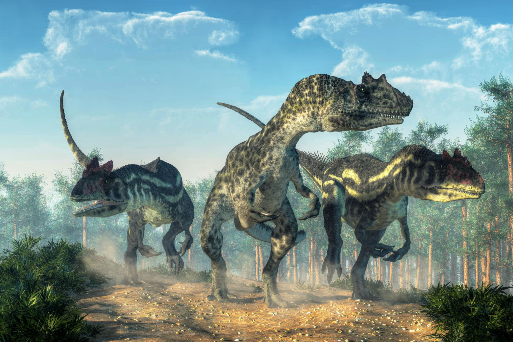
The Allosaurs blitz the party, jumping and shredding with claws and teeth. The party spellcasters scramble up trees for cover, and Orky, Geral, and CoralKing hold the center. Actias and Wulrif cast potent curses and Eldricth Blasts, Calmul breathes poison and provides critical blessings to Orky, and Geral makes a couple of key saves with his shield as well as inspiring Orky to heroic feats with her now-flaming Great Sword. Steve and Benjamin shoot arrows and Viker saves the life of the unfortunate Tysnera who has been taken into the jaws of an Allosaur after she and Tasbros expended all of their potent combat spells.
Triumphant after an epic battle, the party heals up and considers their next action.
700 XPs
Fourth Session
Orcs, the Tower of Endymion, and a mystery
Summerday +128 hours
Dramatis Personae
- Actias Aureus, a 3rd-level Tiefling Warlock
- Benjamin, a 3nd-level Elf Ranger
- Calmul Rhoqiroth, a 3rd-level Dragonkin Bard
- CoralKing, a 3rd-level Gnome Monk
- Geral Bryn, a 3rd-level Human Fighter
- Orky, a 3rd-level Half-Elf Paladin
- Steve, a 3rd-level Halfling Rogue
- Tasbros, a 3rd-level Elf Sorcerer
- Tysnera, a 3rd-level Elf Wizard
- Viker, a 3rd-level Elf Druid
- Wulrif, a 3rd-level Human Warlock
In the aftermath of the battle with the pack of Allosaurs, the party camped between the tread marks of a passing Urb on the Triboar Trail, reasoning the deep indentations and broken ground would provide a more defensible camp site. While resting they saw a curious sight: strange, whirring clockwork automatons marching single file out of the forest over to the bodies of the Allosaurs. Ignoring the party entirely, the strange machines proceeded to render the bodies into small pieces.
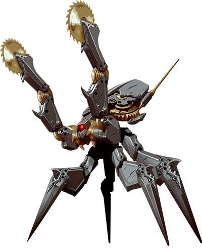
The sights and sounds were unpleasant to say the least, so the party moved a bit further along the trail of the Urb. The rest period was otherwise uneventful, the light from the Enclouding giving a dreamlike quality while everyone meditated and healed.
Midway through the next 8-hour march, the Urban trail turns North into the forest, a vast scar of sawn-down trees and torn-up earth rent between the giant Sequoias.
The group continues East, reaching the ruins of Conyberry.
The forest grows dark and still as the trail winds deeper into the trees. Heavy vines and thick layers of moss drape the branches, and the air is noticeably colder than it was in the ruined village. Rounding a bend in the trail, you see a screen made from the warped branches of trees standing close together, woven into a domelike shelter in the shadows. A low doorway leads inside.
The adventurers enter.
The air grows cold, and a powerful feeling of dread grips you. A cold, pale light flickers in the air, rapidly taking on the form of a female elf, her hair and robes waving in a spectral wind. She might have been beautiful once, but a hateful expression twists her features now. “Foolish mortals,” she snarls. “What do you want here? Do you not know it is death to seek me out?”
"We have brought you a gift," replies Wulrif. He offers her Garaele's Silver Comb.
The ghostly figure smiles with cold amusement. “Very well,” she says. “I know that you seek many things. Ask me one question, and I will give you an answer.”
"Where is Bojangle's spellbook?" asks Wulrif.
"I traded that to a Necromancer named Tsernoth from Iriaebor, let's see, more than a hundred years ago. I do not know what happened to it after that."
Agatha disappears.
After some consultation, the party decides to head South to look at the Old Owl Well, a point of interest on the map. The ground gets steeper and the wind picks up.
They encounter an old dwarf riding a horseless carriage.
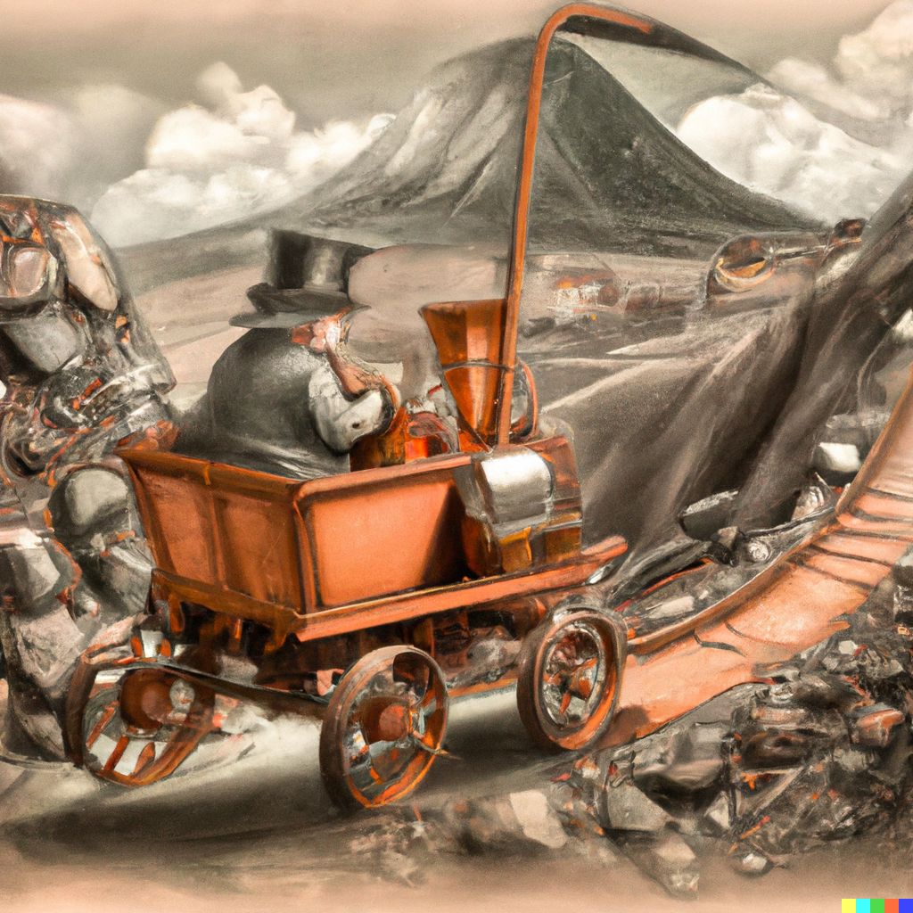
"Hallooooo!" he yells, seemingly friendly.
"Hello", replies Orky.
After establishing that he is a Miner around these parts, the party asks a few questions.
On the strange mechanical scavengers:
"Oh, avoid the Clockwork Horrors if you can."
"But what do they want?"
"No one knows, but best not to get in their way if you can help it."
"What's Old Owl Well?"
"Oh, an ancient tower. Be careful, there's Undead been spotted around there."
After a few more shouts the party continues, finally making camp on a hillside as the wind picks up.
And that's when the Orc war-band attacks!
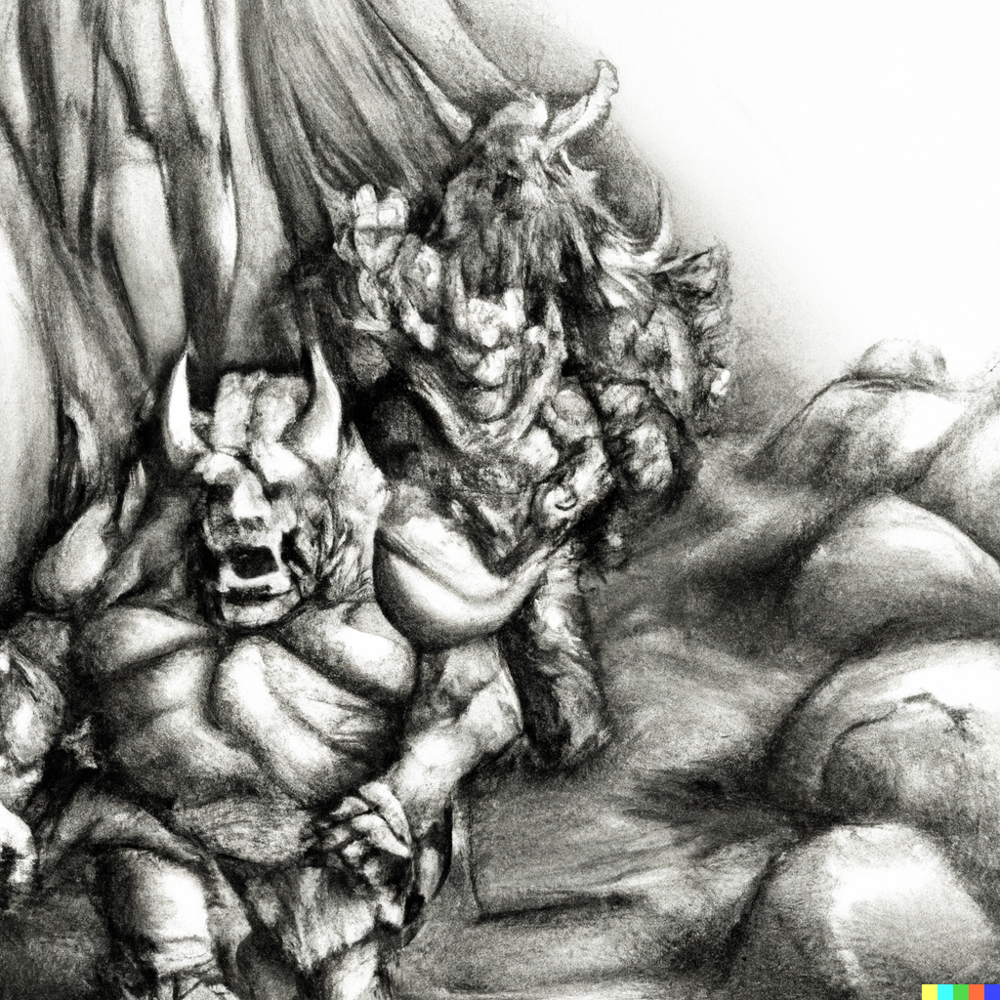
The party isn't surprised, but the Orcs have the high ground and the wind makes archery difficult.
There are ten Orcs, with a fearsome War-Chief and, as it becomes apparent, a Shaman. The Shaman casts buffs on the attacking group which rushes downhill at the party. Geral, Orky, and CoralKing move to block.
Benjamin and Steve shoot arrows with limited success. The unusual resistance of the Orcs to Hexes and such from Wulrif and Actias indicates that the Shaman has countered some of their spells. Tasbros and Tysnera get in some damaging spell strikes. But it is the center that is held by Geral, Orky, and CoralKing, who absorb the brunt of the warband's attacks.
CoralKing goes down no less than three times, revived by Viker and Calmul before finally falling. His stand gives Orky and Geral time to deal with the Shaman and the other Orcs, until only the War-Chief is left. The War-Chief's death strike is a mighty blow which nearly takes Geral with him.
Viker heals CoralKing just before he takes the long dirt nap to join his ancestors.
Battered, the party rests, taking suitable trophies from the Orcs.
Again, two Clockwork Horrors arrive and the party leaves them to their grisly task. During the Long Rest, Benjamin sees three leave.
As you crest a low ridge, you spy the crumbling ruins of an old watchtower standing amid the rugged hills. The place is so old that the walls are only mounds of rubble enclosing a courtyard of sorts, adjacent to the broken stump of an old tower. A colorful tent has been set up in the middle of the courtyard, but no one is in sight.
Actias casts Invisibility on Steve, who stealthily reconnoiters.
A few minutes later, a quite visible Steve walks stiffly back, in some sort of magical grip by a bald, tatooed, red-robed Mage. Twelve Zombies lurk nearby, but do not attack.
"What is the meaning of this?" asks the Mage.
Wulrif seems to be the de-facto spokesperson of the group.
"We were looking for the Old Owl Well."
"Indeed, you have found it." An odd gleam in his eyes. "Have you spoken to Agatha?"
"Well, yes."
"I have a question of her I would bade you ask, and a gift to offer." A strange metal box floats over.
"What is inside the box?"
"Probably best you don't know," says the Mage with a chilling smile. "I can offer you this ring as a reward."
Viker goes into a brief trance, then nods and whispers:
"It's a Ring of Protection."
The party consults briefly.
"We accept."
Steve the Halfling walks over of his own accord, unharmed.
The party treks back down the foothills, surprisingly not encountering anything unusual. Another four hours travel brings them to Agatha's lair.
A wave of cold, and Agatha looks at the party, curiously.
"We have a gift, and a question."
Agatha gestures and the curiously heavy metal box floats over, lid opening.
"Acceptable. What is your question?"
"What is the name of the tower at Old Owl Well?
Agatha seems to think a moment. "The Tower of Endymion." She vanishes.
Back to Old Owl Well. The Mage receives the answer with interest, and delivers the ring. After consultation, the party decides that CoralKing shall be it's bearer.
But the next rest period brings a strange clicking sound, and the appearance of three Clockwork Horrors. Ignoring the rest of the party, they make a beeline for CoralKing.
The things have mechanical saws and pincers, and return fire with Lightning Bolts when Benjamin hits them, harmlessly, with his arrows. No weapon the party has seems to have the least effect on them. CoralKing struggles, but is astonishingly quickly subdued. They cut off the ring (and CoralKing's finger), then retreat back the way they came. Actias sends an Eldritch Blast at them, narrowly dodging return Lightning Bolts.
The party looks at each other haplessly, then go to heal CoralKing.
1000 XPs
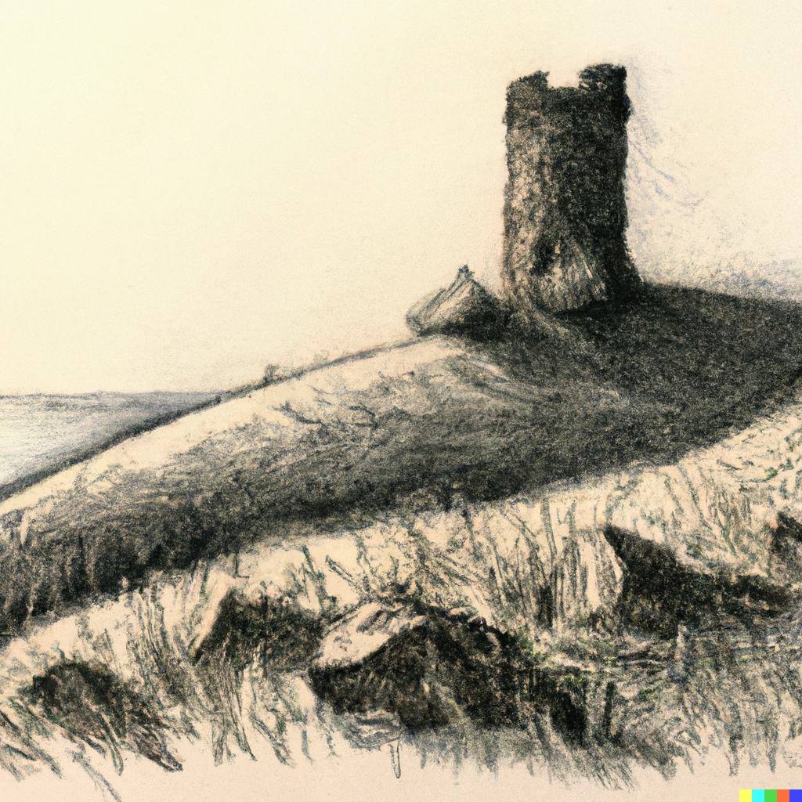
Fifth Session
Return to Phandalin
Summerday +210 hours
Dramatis Personae
- Actias Aureus, a 4th-level Tiefling Warlock
- Benjamin, a 4th-level Elf Ranger
- Calmul Rhoqiroth, a 3rd-level Dragonkin Artificer
- CoralKing, a 4th-level Gnome Monk
- Geral Bryn, a 4th-level Human Fighter
- Orky, a 4th-level Half-Elf Paladin
- Steve, a 4th-level Halfling Rogue
- Tasbros, a 4th-level Elf Sorcerer
- Tysnera, a 4th-level Elf Wizard
- Viker, a 3rd-level Elf Druid
- Wulrif, a 4th-level Human Warlock
Viker revives CoralKing, who immediately wants to get his ring back (the Precious).
Benjamin uses Primeval Awareness to try to track the Clockwork Horrors, but they are something beyond his understanding. He does sense a Dragon flying North of the party just before it moves out of range.
Tasbros thinks the Clockwork Horrors are some kind of Construct, and Calmul agrees.
The great tracks of the Urb once again provides shelter as the party marches for two rest periods back to Phandalin. They greet Sister Garaele at the Shrine of Luck and relay Agatha's answer. Sister Garaele is grateful and offers her healing and more potions. She can't regenerate CoralKing's finger, but Qelline Alderleaf, a local farmer, might know a Druid who can.
The group heads back to the Townmaster's Hall, where they meet Harbin Wester, and retrieve the Goblin from the gaol. Geral makes the Goblin swear allegiance as his armor bearer, and names him Snaga. The party gives Harbin the Orc tusks, for which he pays 5gp per pair, 50gp total. Calmul and Geral spot the firearms carried by Harbin's Dwarven mercenaries, and note that they don't seem to protect anyone else in the town. Harbin talks about the Redbrand Ruffians, who recently arrived and began beating up and killing townfolk.
300 XPs
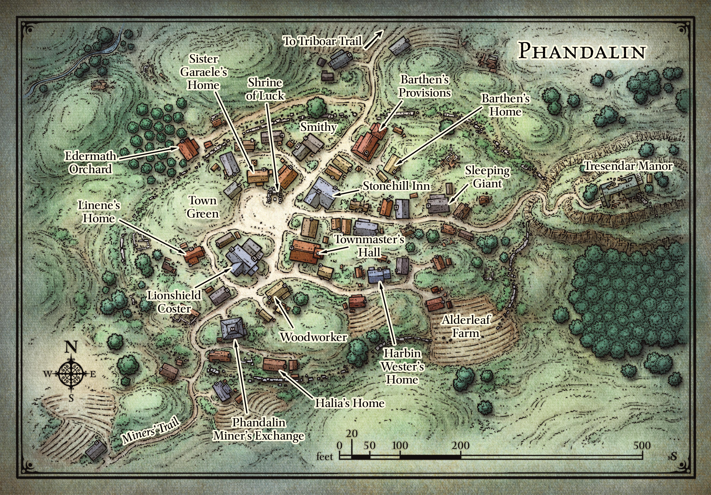
The party heads to the Phandalin Miner's Exchange, meeting the proprietor, Halla Thorton. A shrewd, sharp-looking human woman, she tells them more about the Redbrands, and offers 100gp for the death of their leader, an unknown Mage who recently arrived. Wulfric senses an ulterior motive, though. Halla notes that many Redbrands hang out at the Sleeping Giant Inn, and but their leader is almost always at Tresendar Manor. Halla thinks there might be two dozen Redbrands.
The party carefully reconnoiters the manor, preparing to set a trap near the Sleeping Giant Inn. By chance, four Redbrands emerge from the Sleeping Giant Inn, triggering the ambush.
It's any easy fight for the party, and the Redbrands are quickly overwhelmed. A Redbrand is captured and interrogated, and the party discovers that:
- The leader of the Redbrands is a Human Wizard known as Glasstaff. Arcana knowledge by Tysnera notes that is likely a Staff of Defense.
- Someone called the Black Spider hired the Redbrands to frighten off adventurers and intimidate the locals. The Black Spider sent Bugbears to reinforce the Redbrands.
- Underneath the manor lives a hideous "eye monster", which the Redbrands avoid.
- The Redbrands have captive townsfolk "near the old crypt", guarded by Skeletons.
Benjamin uses Primeval Awareness again to discern that there is some sort of Aberration underneath the manor, as well as a large group of Undead.
The party returns to the Phandalin Miner's Exchange, deciding to pass on assaulting Tresendar Manor. Wulrif discerns that Halla is interested in taking over the Redbrands.
They encounter Sindar Hallwinter, who seems to be the new Townmaster.
"What happened to Harbin, you ask? As soon as he saw me, that fool scurried off with his guards back to his Bank. Good riddance, I say! He didn't have the fortitude to do what needs to be done around here. But how goes the search for Gundren? Have you found Cragmaw Castle? I'll pay you 500gp for the rescue of Gundren Rockseeker.
The party finds this more appealing.
Snaga indeed knows some crafty pathways which, after a full 8 hours march, lead the party to Cragmaw Castle without notable encounters.
The party scouts cautiously.
Viker shapeshifts into a field mouse and hops into Steve's pocket. Actius turns Steve (and Viker) invisible. Benjamin follows stealthily as the three of them take up station by the front entrance to the West.
The rest of the party carefully moves to the Southern entrance, beneath the arrow slits. Calmul produces small, scurrying spider Constructs which Infuse Orky's Chain Mail and Greatsword with Magic.
Actius uses Mold Earth to collapse the South Wall, exposing the Goblins inside!
400 XPs
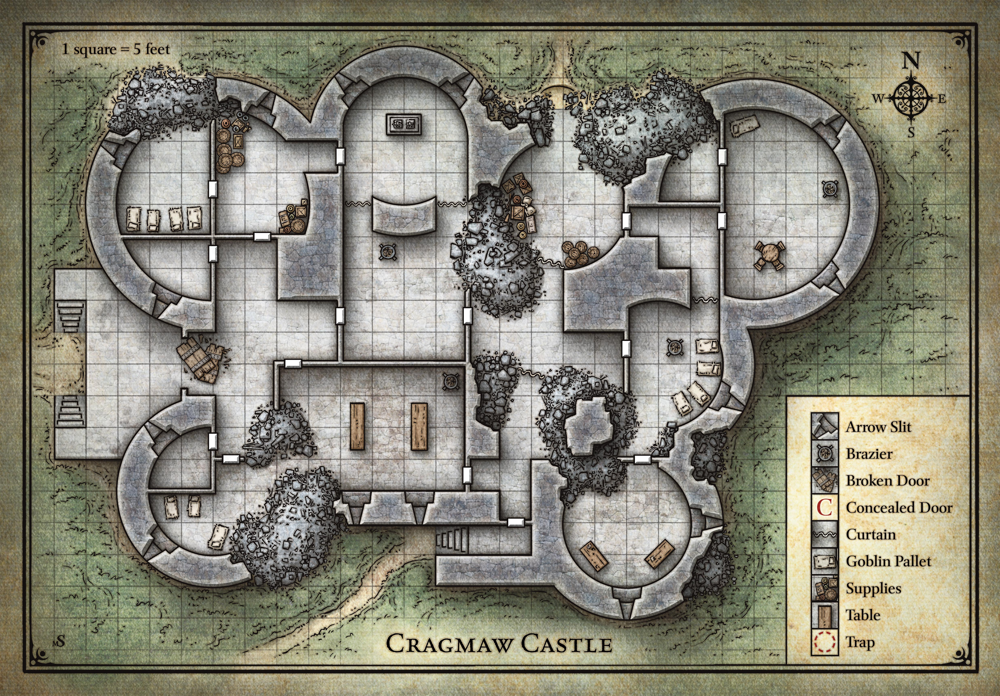
Sixth Session
Attack on Cragmaw Castle
Summerday +270 hours
Dramatis Personae
- Actias Aureus, a 4th-level Tiefling Warlock
- Benjamin, a 4th-level Elf Ranger
- Calmul Rhoqiroth, a 3rd-level Dragonkin Artificer
- CoralKing, a 4th-level Gnome Monk
- Geral Bryn, a 4th-level Human Fighter
- Orky, a 4th-level Half-Elf Paladin
- Steve, a 4th-level Halfling Rogue
- Tasbros, a 4th-level Elf Sorcerer
- Tysnera, a 4th-level Elf Wizard
- Viker, a 3rd-level Elf Druid
- Wulrif, a 4th-level Human Warlock
From the journal of Dame Orky
Thus begins the smiting of Evil:
Initiatives & First Turn
- Benjamin comes in the west-side door and opens a door to attack a pack of Goblins.
- Coral King attacks a Goblin and hella misses.
- Steve shoots his Short bow, crits a Goblin and kills it.
- Calmul blasts a Goblin with his musket for another kill.
- Tysnera casts Firebolt on a Goblin but misses.
- Viker casts Frost Bite on Goblin dealing 3 damage and Disadvantage on its next attack.
- Wulrif Hexes and Edrich Blasts a Goblin, killing it.
- Actius Edrich Blasts a Goblin and downs it.
- Geral swings on a Goblin and deals 6 damage.
- Tasbros damages a Golbin with Mind Sliver.
- Goblins attack Benjamin and deal 8 points of damage, same on CoralKing, who Fades Away as a Reaction.
Turn 2
- Benjamin gets hit by some sort of creature with tentacles, tail and lots of range, taking 19 damage. (I think it’s a Displacer beast-nope!)
- Benjamin uses his Hunter's Sense to discover the creature is Resistant to Bludgeoning, Piercing, and Slashing with nonmagical weapons. A hit by the tentacles allows it to drag you into its area even though we still can’t see all of it.
- Benjamin gets messed up and heals himself.
- Here we find out that it’s a Grick Alpha.
- CoralKing attacks a damaged Goblin with a hit and kills it.
- Steve ducks and comes in behind and kills a Goblin.
- Calmul shoots at a Goblin and misses.
- Tysnera casts Firebolt and misses.
- Viker kills a Goblin.
- Wulrif attacks the Hexed Goblin and kills it.
- Actius Eldritch Blasts, hits, and deals 9 damage to a Goblin, killing it.
- Geral hits a Goblin and rocks him.
- I hit and kill the last Goblin, then move toward the Grick.
- Tasbros moves toward the Grick.
- The Grick slithers along the walls and encounters us. It attacks Steve with tail and tentacles, missing.
Turn 3
- 2 Goblins and 4 Hobgoblins come in behind the Grick with 8 more from the Front.
- A Goblin misses Benjamin and 2 Hobgoblins too.
- Tasbros gets hits once and gets 7 points of damage.
- Benjamin disengages and steps back.
- CoralKing moves and attacks the Grick with his hands in a flurry and hits once. Damage is 3 points.
- Steve disengages, hides behind me, and attacks a Goblin. He deals 16 damage and kills it.
- Calmul shoots a goblin and kills it with a crit.
- Tysnera casts Melf’s Acid Arrow against the Grick and misses. But still does 5 splash damage.
- Viker kills a Goblin.
- Hobgoblin misses 2 attacks on CoralKing.
- Wulrif casts Dissonant Whispers against the Grick, which fails its Wisdom save. It takes 21 damage and immediately slithers away.
- Actius Removes Earth under the Hobgoblin Leader's feet. It makes a saving throw and fails, falling prone. (He gets disadvantage, and everyone else gets advantage on him).
- Geral misses an attack on something.
- I hit the Hobgoblin Leader for 15 damage and it looks hurt!
- Tasbros casts Sleep on all of the remaining Goblins.
- The Grick moves forward again and attacks Tasbros. He has Mirror Image ready and the tentacles hit one of the duplicates. The tail hits another duplicate. If a tentacle would have hit, it would have taken a bite as well. Luckily, Tasbros did pretty well!
- The Hobgoblin attacks Tasbros and misses. It hits Viker and deals 7 points of damage. Another one deals another 7 points of damage. Another one misses Tasbros and Steve. Another one misses me.
- The Hobgoblin Leader gets up from prone.
- The Hobgoblin Leader attacks CoralKing and misses.
- A Hobgoblin tries to shove CoralKing and succeeds, knocking CoralKing prone.
Turn 4
- Benjamin hits a Hobgoblin and deals 10 points of damage.
- CoralKing gets up and then high kicks the Hobgoblin Leader for 8 damage.
- Calmul shoots a Goblin and kills it
- Tysnera casts Sleep on 3 goblins (lowest hit points first).
- Viker throws an Ice Knife at the Grick and hits, doing 12 damage.
- The Hobgoblin Leader attacks Geral and hits twice, doing 23 damage.
- Wulrif hits the Grick with an Eldritch Blast and does 13 damage.
- Actius misses.
- Geral has advantage on the Captain and misses. He heals 14 HP.
- I channel a Vow of Enmity and hit the Hobgoblin Leader, doing 14 damage.
- Tasbros casts Ray of Frost, doing 5 damage and reducing speed by 10 on the Hobgoblin.
- The Grick attacks Tasbros and misses with the tail. It hits with a tentacle and does 12 damage. Then it drags Tasbros in for a bite with the beak, doing another 11. Tasbros is not dead, but he's not doing well.
- 2 Goblins attack Viker and both hit, for 8 damage.
- 1 Hobgoblin attacks CoralKing and misses.
- Benjamin attacks a Hobgoblin and makes a Critical Hit, doing 14 damage and killing it.
- CoralKing attacks the Hobgoblin Leader with a headbutt. He misses.
- Steve Sneak Attacks the Hobgoblin Leader, doing 14 damage. The Leader goes down!!!
- Calmul shoots the Grick and hits! He does 12 damage and takes it down!!!
- Tasbros is busy dying.
- Viker heals Tasbros with Cure Wounds for 8 HP, saving him.
- Wulrif Eldritch Blasts one of the Goblins but misses.
- Actius hits a Hobgoblin for 12 damage.
- Geral moves to the remaining Hobgoblin and misses.
- I move to the Hobgoblin, swing, and miss.
- The Hobgoblin attacks Geral and misses.
Turn 5
- Benjamin attacks a Goblin with his short sword and hits. It dies.
- CoralKing misses a throw and loses his javelin.
- Steve shoots a Hobgoblin with his Short Bow and kills it.
- Calmul shoots a Goblin with his Musket and kills it.
- Tysnera casts Ray of Frost and misses.
- Viker misses with her scimitar.
- Wulrif casts Eldritch Blast and misses.
- Actius attempts the same and finally hits! The last Goblin is toast!
Magically the castle clears and we hear noises, so we move towards a back room to make a stand since it only has one entrance. Benjamin is able to tell us that a couple of monsters are coming.
Tasbros takes a Healing potion, as does Viker. Actius blows a hole in the back of the room so we can escape if we need to.
First Turn
- Benjamin shoots his Longbow and misses.
- CoralKing holds his action – meaning he waits until someone attacks him.
- Steve stabs a Goblin with a dagger and kills it.
- Calmul shoots a Goblin and misses.
- Tysnera casts Firebolt on a Goblin and kills it.
- Viker casts Frostbite on a goblin, who makes his Saving Throw.
- Wulrif misses something.
- Geral cheers everyone on, granting bonus Hit Points.
- I kill a Goblin.
- Tasbros puts 2 Goblins to Sleep.
- CoralKing uses his attack as he is approached and misses.
- Goblins miss Steve and me, who are at the front.
Second Turn
- Benjamin shoots at a Goblin and misses.
- CoralKing shin kicks a Goblin and deals 7 damage, killing it!
- Steve misses something.
- Calmul misses something else.
- A Wolf ridden by a Bugbear (later we find out this is "King Grol") moves outside to attack us from behind. An unseen attacker hits Actius and knocks him unconscious. A crossbow bolt is seen in his back.
- Tysnera casts Mage Armor on herself.
- Viker casts something and misses.
- Wulrif hides behind the outside tree and actively investigates the area, finding the Drow.
- Geral is searching for the Drow outside and just misses with a 14 Perception check.
- The other Bugbear heads outside with the Wolf-rider around the side of the building. The Wolf breaths frost on Geral, who Saves, taking 8 HP (half) damage.
- An enemy Shaman Magic Missiles me for 12 damage.
- A Bugbear attacks Geral and misses.
- I Lay on Hands to Actius, healing him of the Poison, but he's still prone.
- Tasbros uses Ray of Frost but only deals 2 damage.
- Steve stabs a Goblin and kills it.
Third Turn
- Benjamin shoots a Hobgoblin with his Longbow and does 10 damage.
- CoralKing kicks a Goblin and misses.
- Steve takes out a fresh Hobgoblin.
- Calmul shoots the Drow and hits for 7 damage!
- The Wolf recharges its breath weapon and misses Geral by an inch. The Bugbear hits Geral, who only takes 4 damage. The Drow also misses.
- Tysnera casts Hold Person on the Bugbear Chief, who Saves.
- Viker heals Geral.
- Wulrif Hexes the Drow but misses with Eldritch Blast.
- Actius gets up and casts Eldritch Blast but misses.
- Geral uses Commander's Strike on me to hit the Bugbear Chief. I swing and do 21 damage! Geral uses Action Surge and hits, doing 5 more damage.
- A Bugbear attacks me and misses both swings. The Bugbear Chief riding the wolf swings at Geral and hits once, doing 12 damage.
- Orky hits the Bugbear Chief with Searing Smite and deals 21 damage.
- The Hobgoblins attack Steve and do 11 damage.
Fourth Turn
- Benjamin shoots the Bugbear and deals 14 damage. Kills him? (He gets up again, healed by the Shaman as we find out later.)
- CoralKing attacks a Goblin and hits. He does 6 damage and kills him.
- Steve takes out a Hobgoblin.
- Calmul shoots the Drow for 14 damage.
- The Wolf attacks me and hits, doing 15 damage, reduced by 3 because of my Heavy Armor Master feat.
- Tysnera casts Melf’s Acid Arrow on the Wolf, doing 24 damage!
- Viker heals Geral by 9 hit points and everyone else gets 3 from her Unicorn totem.
- Wulrif hits the Drow with a spell, doing half damage of 10 hit points due to a successful saving throw.
- Actius hits the Drow and deals 10 damage.
- Geral uses Commander's Strike on me and I hit the Wolf for 25 damage!
- The Hobgoblin Leader attacks Orky and deals 15 damage, minus 3. CoralKing takes 3 Magic Missiles to the face from the Shaman and gets 11 damage.
- I hit the Wolf again for 19 damage.
- Tasbros Magic Missiles the Wolf for 18 damage. It finally goes down! We later find out it's a Winter Wolf.
- A Hobgoblin goes down on an attack of opportunity.
- Steve takes out a Goblin on an attack of opportunity.
Fifth Turn
- Benjamin does 15 damage on the remaining Bugbear Leader.
- Coral King attempts a hit.
- Calmul shoots the Bugbear and deals 5 damage.
- The Drow disappears through a portal.
- Tysnera casts Sleep on the forest where the Drow disappeared, but nothing happens.
- Viker heals Geral.
- Actius tries to hit the Bugbear.
- Geral uses Commander's Strike on me and I deal 25 damage to the Bugbear Leader.
- I do another 21 damage on the Bugbear leader with my Great Sword.
- Tasbros casts Ray of Frost on a goblin for 4 damage.
- Goblins attack Steve and CoralKing, missing.
Sixth Turn
- Benjamin drops the Bugbear leader with his Longbow!!!
- CoralKing kicks the Goblin in front of him and does 13 damage, killing it.
- Steve annihilates a Goblin.
- Calmul misses a Hobgoblin.
- Tysnera cast Sleep on 3 Goblins, downing them.
- Viker uses Ice Knife on the Hobgoblin and deals 9 damage, killing our final foe!!!
Benjamin sends his Pterodactyl to scout and it senses a Monstrosity locked in an area. The Southeast tower is heavily barricaded with snuffling and growling inside. Even the door is barricaded by rocks.
We finally find Gundren Rockseeker, tied up in the Southwest room. With him is his map, which shows the way to Wave Echo Cave, a place that makes magic items.
2,600 XP
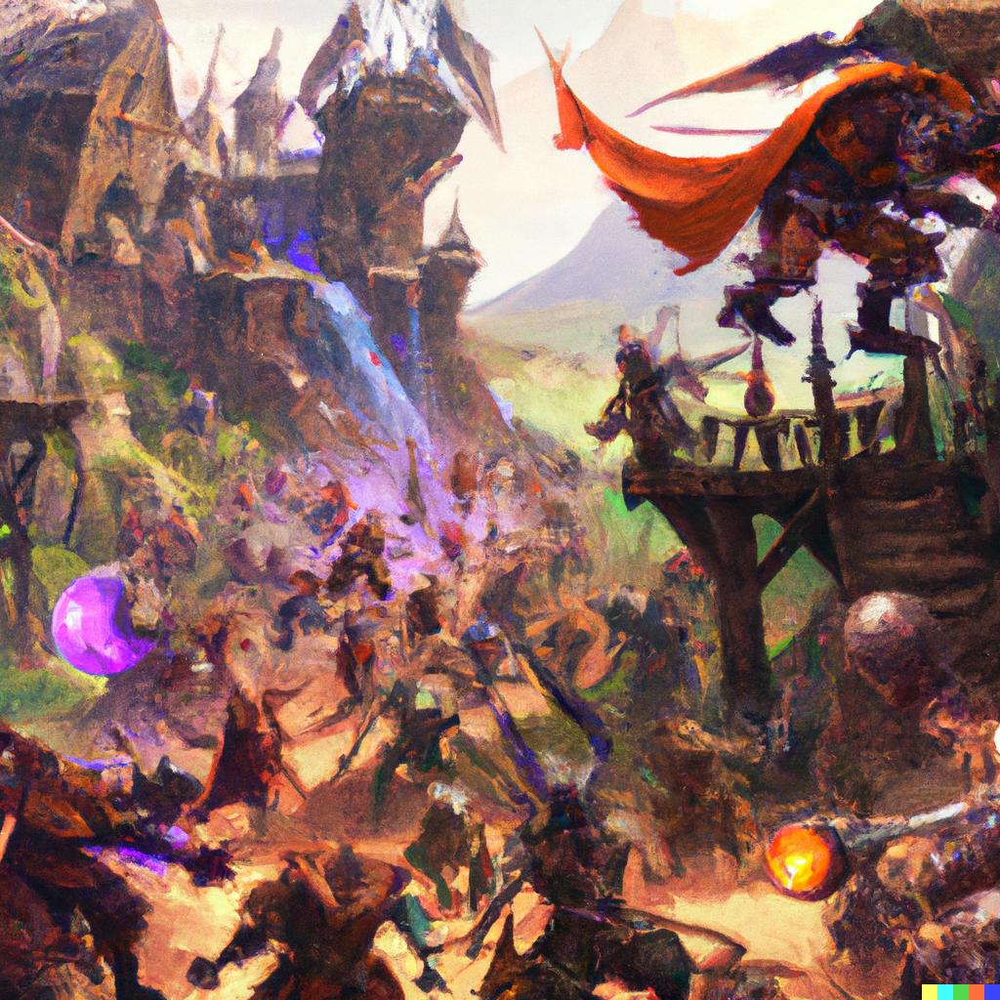
Seventh Session
Return of the Automatons
Summerday +294 hours
Dramatis Personae
- Benjamin, a 4th-level Elf Ranger
- CoralKing, a 4th-level Gnome Monk
- Orky, a 4th-level Half-Elf Paladin
- Steve, a 4th-level Halfling Rogue
- Viker, a 4th-level Elf Druid
From the journal of Dame Orky
Gundren is so happy to see us! He wants to return to Phandalin and then take us along to Wave Echo Cave. Gundren was in King Grol’s chamber and grabs his map. Steve finds 3 healing potions, 220 sp, and 160 electrum hidden under a filthy mattress. King Grol had black armor and a black sword, which Calmul says is made of Adamantium. Gundren recognizes the sword and armor as Sildar’s, who he says will probably want it back. For the time being, I take the chain mail and Viker takes the sword.
There is a large beast trapped in the castle. Benjamin wants to open the door. I do not! Benjamin starts digging and we see a paw digging from the other side! Its head comes out and we see that it’s an Owl Bear. Now it’s completely out, sees us, meanders over, and starts snacking on the remains of a Goblin. A few of us go to explore the room it came from. We move 30 ft toward a different corridor and attempt to go around the Owl Bear, which starts growling at us. Steve tries to sneak around the Owl Bear, but his Stealth roll fails. So, he uses Luck but fails again. He is forced to step carefully back and move through another corridor. The Owl Bear stops growling and turns back to it's Goblin. We follow Steve. We can still hear growling and shuffling but it gets fainter. Viker, who is waiting outside the castle, sees the Owl Bear run off. I stay back to keep distance, everyone else enters the room.
The room is a silo that extends far up into darkness. Benjamin and CoralKing see a jagged ledge that used to be a second floor. Back from the ledge, nearly hidden, is a chest. Benjamin manages to get up to that ledge. Steve climbs up a rope that Benjamin throws down. Steve uses a crow bar to pry the chest open. It has coins, 2 scrolls, and a potion bottle. Steve takes the coins (120 gp and 90 electrum). He gives Benjamin a scroll and Viker the other scroll, along with the potion. Viker can identify the scrolls.
Steve takes a cursory look around and sees that there’s not much left in the rest of the castle. As we join Viker we hear a weird crashing sound in the forest. Viker identifies the potion as healing and the scrolls are Silence and Revivify. Since we found the 3 healing potions with Gundren, we now have 4. We also now hear a clicking sound like the ones the automatons made when they chop up a body. Viker and Benjamin go to investigate the sound. They find a clearing with 2 Stegosaurs, one on the ground. The automatons are trying to reach it, but the other Stegosaur is whipping around with its tail, defending it. We can also see a clutch of eggs by the fallen Stegosaur.
Meanwhile, Steve, CoralKing, and I are hearing the noises. The automatons turn toward us like they might attack. So, well, we roll Initiative:
Turn 1
- Benjamin uses Hunter’s Sense. They are Constructs, vulnerable to Acid. They are immune to Lightning, Poison, Cold, Fire, Radiant, and attacks from Piercing/Slashing non-magical weapons. We find all this out later, Benjamin only has time to shout out "Use magical weapons!".
- I approach the closest Construct and swing my Infused Greatsword, missing.
- Viker uses her new Longsword and hits, doing 5 damage.
- Steve hides.
- CoralKing attacks the other Construct with an unarmed strike and a bonus strike. He hits with one and deals 7 damage.
- A Construct attacks me and hits. It deals 9 points of damage after 3 attacks. A second one Lightning Bolts CoralKing with (luckily) 4 points of damage. The 3rd one attacks the Stegosaur and hits all 3, one critically. It deals a lot of damage. The Stegosaur staggers but attacks back. Because its tail spikes are mostly piercing, it deals little damage.
Turn 2
- Benjamin tries to communicate to the Stegosaur that we are going to help them. He attacks a Construct with his Quarterstaff, missing.
- I attack again and do 8 damage. (18 to hit)
- Viker uses her Spirit Totem (Bear) as a Bonus action, giving everyone 9 temporary hit points. She swings her sword and hits, dealing 8 damage.
- Steve makes an unarmed strike and misses.
- CoralKing makes an unarmed strike and crits, dealing double damage (7).
- I get messed up by the Constructs and do 20 damage in return. Viker gets hit once and takes 3 damage. The 3rd one attacks the Stegosaur.
Turn 3
- Benjamin misses.
- I Disengage and moves behind the Construct to flank it with Viker and gain Advantage. Then, I cast Searing Smite as a Bonus action (extra 1d6 fire damage + my enemy must take a constitution save)
- Viker misses her attacks.
- Steve hits the Construct critically and does 3 damage.
- CoralKing hits one headbutt and does 5 damage.
- The Constructs hit CoralKing 1/6 times with their flanked advantage on him, lucky! He gets 9 points of damage. I get bit for 7 points of damage. One of the Constructs shoots 2 bolts of Lightning at another damaged Construct and heals it 34 HP! The Stegosaur attacks and does 15 damage.
Turn 4
- Benjamin moves and heals me for 9 HP while a Construct gets an Opportunity attack on him but misses.
- I hit and deal 22 damage! However, the extra flames don't seem to have an effect.
- Viker disengages and moves to the 3rd Construct (it is the most damaged since it keeps getting hit by the Stegosaur) to cast a Shillelagh cantrip as a Bonus action which gives her wooden staff magical damage.
- Steve hits a Construct with an Unarmed attack and does 2 points of damage.
- CoralKing uses Step of the Wind (which disengages from the 2nd Construct as a Bonus action) to move and flank the 1st Construct with me and attack. He hits and does 8 damage.
- The 2nd Construct moves closer to me and attacks. They hit twice and deal 10 points of damage but only 4 stick. Remember that every hit is reduced by 3 because of my armor and feat! A critical hit is also done by the 1st Construct and does 22 points of damage, 19 sticks. The 3rd one attacks Viker and does 7 points of damage. The Stegosaur flanks and hits a Construct for double damage! That Construct is down!
Turn 5
- Benjamin heals me for 9 points!
- I swing on the 1st Construct, do 14 damage, and it goes down! So, a fully healed Construct is still up.
- Viker hits the 2nd construct (the one remaining) and deals 3 damage.
- Steve hits the Construct and does 2 damage.
- CoralKing moves closer to the remaining Construct using his Flurry of Blows and hits once. He does 5 damage.
- The 2nd Construct shoots bolts of lighting at its companions, healing the 1st one and reviving the 3rd one. They seem to act in perfect coordination. The Stegosaur knocks the 3rd one over again.
Turn 6
- Benjamin heals the downed Stegosaur for 12 points.
- I hit with the Greatsword and do 14 damage to the 1st Construct.
- Viker hits it so the Construct is back down.
- Steve misses a dagger throw.
- CoralKing does 11 damage to the remaining Construct with a flurry of blows!
- The Construct heals his friend 13 and the other 17. The Stegosaur hits with advantage and drops one. The other Stegosaurus gets up, moves, and misses a whack on the 1st Construct.
Turn 7
- Benjamin misses but is now flanking the Construct.
- I hit the 17 HP Construct and do 15 damage.
- Viker hits the damaged Construct and knocks it over again. She also hands Steve her Longsword while keeping her Shillelagh.
- Steve swings on the 1st Construct with the Longsword and lands a critical hit for 19 damage! We should have given him the Longsword sooner!
- CoralKing uses his Flurry of shinkicks with 1 hit and 1 crit for 15 damage.
- 1 Construct gets 21 HP and the other one gets 14 HP. The Stegosaur hits the 21 for 15 damage. The other Stegosaur swings and misses.
Turn 8
- Benjamin misses a swing with his staff.
- I knock the one on 5HP down.
- Viker drops a Construct.
- Steve moves to the Contruct with 14 HP and misses a swing.
- CoralKing flanks the last Construct and uses his Flurry of attacks. He hits once, deals 7 damage, and it drops! As it falls apart, the magic ring and a black, decayed finger fall out of it!!!
The Stegosaurs turn toward us, not knowing if they need to defend themselves against us. We back off, slowly. Benjamin and Viker speak soothingly. It turns out the female was the one up defending while her mate had taken a lot of Lightning bolts. We leave the Druid and the Ranger to communicate with them.
The Constructs have a single large, jeweled eye in the center of their face, and are made of Adamantium. As we remove the eyes we can see the life fade from them. We all gather up as much of their material as we can and stuff it into our backpacks. We go back to our group at the castle and take a long rest.
1,520 XP
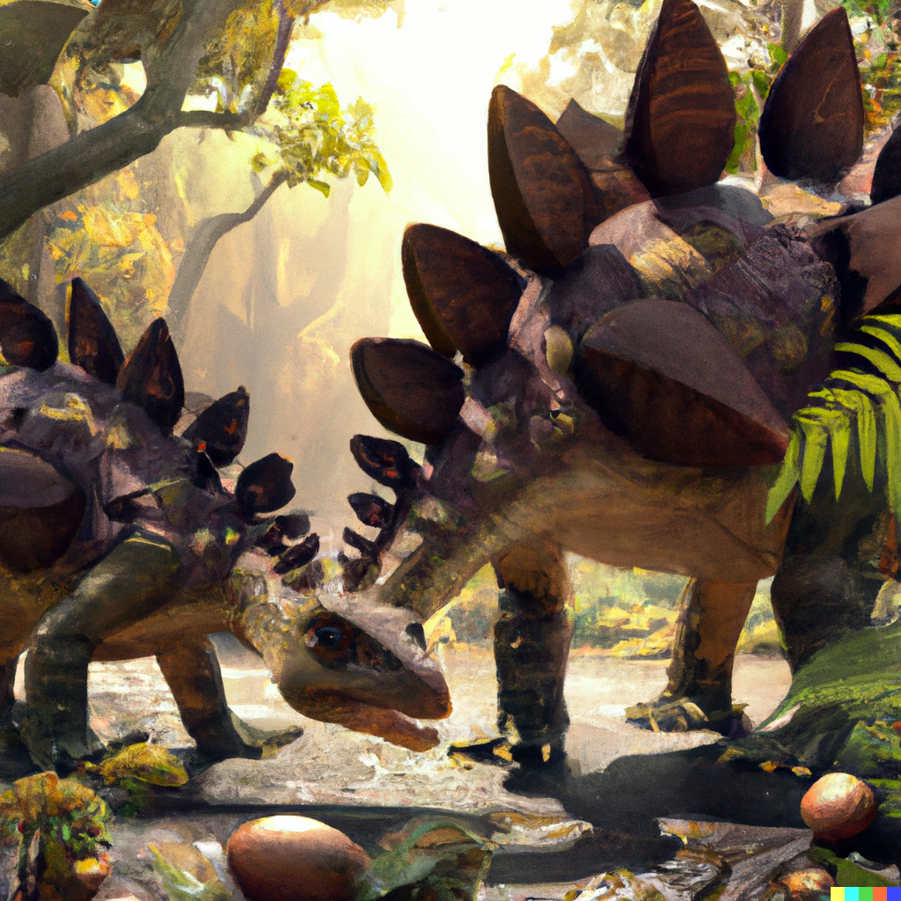
Eighth Session
Unfinished Business
Summerday +318 hours
Dramatis Personae
- Actias Aureus, a 5th-level Tiefling Warlock
- Benjamin, a 5th-level Elf Ranger
- Calmul Rhoqiroth, a 5th-level Dragonkin Artificer
- CoralKing, a 5th-level Gnome Monk
- Geral Bryn, a 5th-level Human Fighter
- Orky, a 5th-level Half-Elf Paladin
- Steve, a 5th-level Halfling Rogue
- Tasbros, a 5th-level Elf Sorcerer
- Tysnera, a 5th-level Elf Wizard
- Viker, a 5th-level Elf Druid
- Wulrif, a 5th-level Human Warlock
From the journal of Dame Orky
The group decides to search the castle, starting with the Southwest corner. We find some Shortbow arrows and ragged bedrolls that stink. In a large room we find many weapons (Morningstars, Longswords), including a finely-wrought Quarterstaff. Actius picks it up and it's lighter than it looks. We determine that it’s a +1 Quarterstaff, so we give it to Actius.
In the large main suite we find a property deed. It names Magus Arnin as the owner and seems to be written on brand new, faintly magical, parchment. The deed is registered in Neverwinter. Geral rolls it up and takes it with us.
Wulrif and others investigate the remaining rooms. In one, Tasbros finds an old brazier. Steve pokes at the pile of coal underneath it, and Wulrif uses Mage Hand to rummage through it. There's a bloody cloth wrapped around a golden statue of an elf with his wings outstretched. We detect Divination magic on it. Wulrif tells everyone else not to touch it, but Actius has already grabbed it.
What is your question?
Actius hurriedly shoves the statuette into his backpack.
We investigate the centermost Northern room.
This chamber occupies the northern tower of the castle. A stone altar stands in the middle of the room, covered with bloodstained black cloth. Golden ritual implements—a chalice, a knife, and a censer—are carefully arranged on top of the altar. Two archways to the south are covered with heavy curtains.
Wulrif uses his Mage Hand to put them in his bag. I sense great evil in this room, but neither Benjamin nor I detect any Undead. Wulrif investigates the altar further and doesn’t find anything. CoralKing produces the surprising insight that the altar isn’t magic per se, but the traumatic events that took place there left an aura.
300 XP
We all have a long rest.
Our plan is to go back to Phandalin to return Gundren, maybe head to Tresendar Manor, and then proceed to Neverwinter to claim the ruined castle.
On our way back, a young Green Dragon swoops down on us from behind, ambushing us with it's Poisonous breath weapon, doing 26 damage to everyone who succeeds their saving throws! For those who didn’t, Actius and I, we take 52 damage and get knocked down. The dragon swoops around for a second pass ...
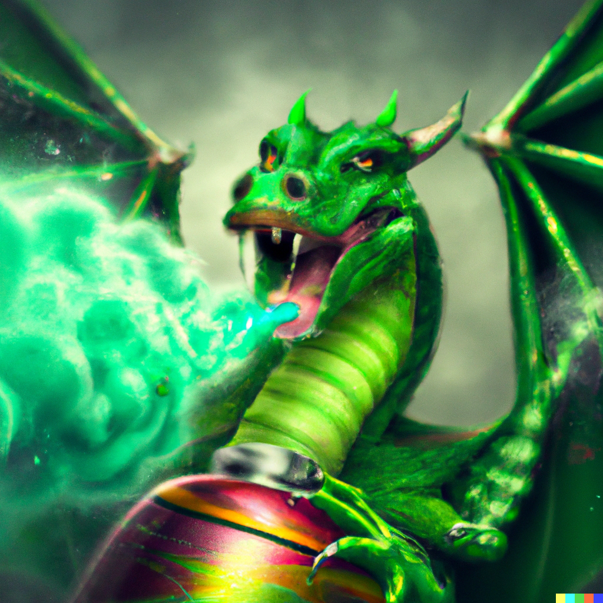
Turn 1
We decide to scatter since we are in the middle of the plains between Neverwinter Wood and the Triboar Trail.
- Benjamin runs away and shoots his Longbow, but misses. He hits with his second shot and does 10 damage.
- Steve moves 25 feet in the opposite direction and shoots his Shortbow, hitting for 6 damage. He also hides, strategically. The dragon needs a 22 to spot him.
- CoralKing runs towards Benjamin and holds his action until the Dragon is within range.
- Actius critically fails his death saving throw.
- The Dragon swoops in and attacks Tasbros, luckily missing with a bite and claw attack, doing 9 HP damage with the other claw. It breathes in deeply ...
- Viker summons her Unicorn spirit totem and casts Cure Wounds on Actius, bringing him back from the brink of death with 12 HP of healing; everyone else is healed 5 HP.
- Calmul communicates with the Dragon in its native language:
Please! I have so much to learn from you!
Faugh! I'm merely snacking on a few elves ....
- We have 4 Elves (Viker, Tasbros, Tysnera, Benjamin), and I'm half-elven. Calmul next attempts to be intimidating and fails.
- I'm prone, so I get up and use Misty Step (2 Mana) to teleport behind a tree.
- Wulrif attempts to barter with the Dragon, but it's not interested.
- Geral shoots the Dragon once and uses Commander's Strike on Benjamin. Geral hits and deals 4 damage. Benjamin also hits and deals 18 damage!
- Tysnera casts Lightning Bolt (8d6 damage!!!) and deals 26 damage! I peek out from behind my tree and silently cheer!
- Tasbros casts Chromatic Orb and deals the Dragon 13 damage.
Turn 2
- Benjamin shoots his Longbow twice and hits for 18 damage. The Dragon is starting to get very mad at Benjamin.
- Steve stealthily shoots the Dragon with his bow and rolls a critical hit on a Sneak Attack for 29 damage!
- CoralKing throws his javelin at the Dragon and hits for 10 HP of damage.
- Actius turns Tysnera invisible and runs away.
- The Dragon puts on a burst of speed and flies 160 ft away!!!
- Viker heals me for 17 HP and everyone else 5.
- Calmul is beside himself.
- I walk towards it and Command the Dragon to halt. It ignores me.
- Wulrif pursues the Dragon, attempting to hit it with Eldritch Blast and failing.
- Geral gives Actius 4 temporary hit points.
- Tysnera stays invisible and recovers.
- Tasbros chases the Dragon and casts Fireball. The Dragon just barely escapes the direct blast, taking 16 damage.
Turn 3
- Benjamin pursues and shoots his bow, dealing 11 damage.
- Steve shoots and misses.
- CoralKing recoveres his javelin.
- Actius pursues with Eldritch Blast and misses.
- The Dragon flies out of range, trailing smoke.
1,000 XP
We all take a short rest.
"We have a problem," says Viker.
We all look back and see that Gundren (and Snaga) are dead. Gundren was supposed to lead us to Wave Echo Cave. Viker has a Scroll of Revivify and asks if we want to use it on him. We all begrudgingly agree, so Viker works on that for 10 minutes.
Gundren wakes up. "What happened?"
"You lost", replies Wulrif.
"Thank you for saving my life, " says Gundren, bowing. "We Dwarves always repay our debts. When we find my brothers in Wave Echo Cave and restart Phandalever Mine, you shall have 10% of the proceeds.
"Sounds good to us", replies Geral.
Phandalin seems oddly deserted ...
There are a couple of Dwaven mercenaries outside of the bank, but otherwise no one is in sight. Gundren wants to go to the Townmaster's Hall to greet Sildar.
"You have rescued my old friend", says Sildar. "I will pay you the reward we agreed to."
"We also have your armor and sword", says Geral.
"Indeed? That is most welcome news! The sword is an heirloom of my family, but I think that a fellow Protector might make better use of the armor than I ..."
"What happened to the townsfolk?", I ask.
"Ah, well, the Redbrands have been carrying off the folk to slavery, I fear. Held in the basement of Tresendar Manor until they conclude their foul business with the Hobgoblins and Bugbears."
"We should have dispatched this grave injustice when we were here last," I say. "You have my solemn Oath that we will defeat these villains."
"Blessings upon you! I do not know how they swell their numbers, but you should find Farmer Alderleaf. She is both cunning and practical, and may know something to aid in your quest."
The farm looks like it hasn’t been used in awhile, but the house looks strong. Geral knocks on the door, and Qelline Alderleaf, a Halfling, answers. She invites us in for a hearty feast. We are grateful and eat, but CoralKing remains hesitant and stands in the corner. She says her son, Carp, might know a secret way to get in the castle. Carp’s friend, Reidoth, is a Druid, and told her about the Undead in the Manor. He seems to have been lured away to Thundertree to deal with a Dragon. The Redbrands are well-equipped and led by a Wizard, Glasstaff.
We travel with Carp toward the manor but he is concerned about the noise from our heavy armor. He says if we can just get to this tunnel, we should be good from there. We take off our clanking armor. The tunnel leads to a storeroom but Carp says there’s a big floating creature in there. Wulrif tries to get Carp to visualize it and then reads his mind, but Carp had fled before he'd gotten a good look at it.
Wulrif and Actius confer, saying it’s not a Death Tyrant. I think that's good news? We all discuss and decide it would be best to approach and attempt to negotiate with it, as opposed to coming in hot through the front door. The Redbrand we interrogated had said they avoid the Beholder, so it and the Redbrands may not have aligned agendas.
We crawl through the tunnel, single file, which is skillfully constructed. We approach the Beholder, but it seems quite mad, rambling gibberish and strange tongues.
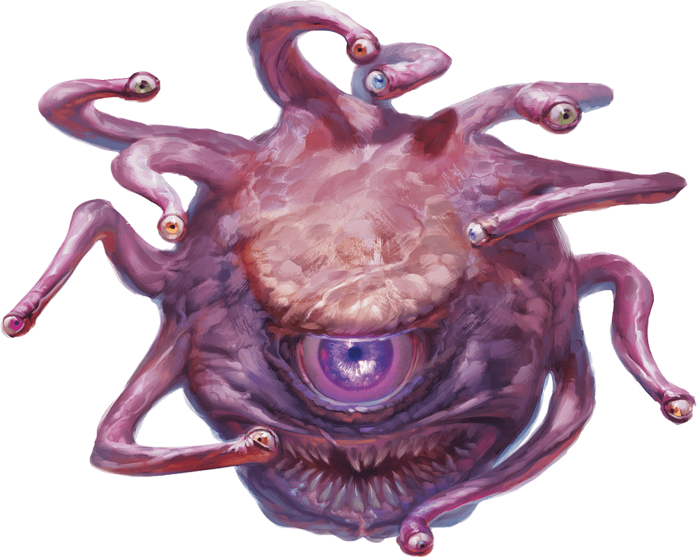
"What are you doing here?" it says, finally, in Common.
"We're just passing through to get to the Wizard," says Geral.
"I don't care but don't touch the Precious!"
"What's the Precious?"
"The thing I must guard since my summoning. But I don't want to guard it. I don't have to guard it if it's gone, so maybe you could take it and I could leave this place! Except then I'd have to kill you all. Will you take it?" it asks eagerly.
"Can you give it to us?", asks Wulrif.
"I would if I could, but my Wizard won't let me."
"Maybe you're hungry?" asks Actius.
"Oh, no, I make my own food. Are you hungry?"
Ten stuffed turkeys with all the fixings on plates materialize in front of us.
"That's not my kind of food ..." It conjures a pile of something foul-smelling and wriggling, proceeding to slurp the things down with great gusto.
Wulrif studies it really intently. Suddenly, he gives a shriek as if his mind has suddenly grasped things never meant for Human understanding. Wulrif begins greedily grubbing down the same nauseous slush as the Beholder.
"Ah, now you understand something of what really nourishes us!" It nods sagaciously.
"Ugh, Wulrif, what are you doing!?" exclaims Geral. He manages to pull Wulrif away from his feast, the mad light fading from Wulrif's eyes.
I think we lost Tysnera and Tasbros here.
We are in a crevice which is unusually cold, and it’s a 20 foot climb into the basement of the manor. Actius casts Mold Earth to make a very convenient ramp for us to walk up. Topside, the crevice is spanned by two narrow wooden bridges. Viker transforms into a mouse and heads West, finding a room with 8 Redbrands. She goes into the room across the hall and sees 12 Redbrands, eating. One of them throws a dagger at her in disgust. Viker skitters away and reports back. We confer.
I'm going to block the middle of the hallway to control how many can attack us at once. Actius makes the hallway behind us difficult terrain to hopefully slow the others down. CoralKing stays at the rear of the party to defend us from that direction.
First Turn
- Viker casts Moonbeam (what is a Moon?) on the spot where the first Redbrand appears. Ghostly flames envelop him, screaming, as he takes 14 damage.
- Calmul's Musket misfires and dumps black powder everywhere.
- Wulrif Hexes and Eldritch Blasts the Redbrand. He goes down.
- CoralKing holds his action.
- Geral holds his attack.
- I hold my attack.
- Actius holds.
- Another Redbrand runs out into the Moonbeam; he goes down. A very loud alarm rings throughout the whole manor. Another Redbrand comes out of the room, and I slice him in half. Yet another Redbrand gets flamed by Viker's Moonbeam.
- Half of the Redbrands start to come out the back hallway, so CoralKing moves to face them. A Redbrand shoots and hits him for 4 HP damage.
- Geral shoots and crits the guy over my shoulder.
- Actius backs up to come help CoralKing.
Second Turn
- Viker maintains concentration on Moonbeam.
- Calmul repairs his Musket.
- Wulrif backs up to get a better view of both streams of Redbrands, over one of the bridges. It collapses and he falls down into the chasm, taking 4HP damage.
- CoralKing moves back to get in a more strategic position and holds his action.
- A Fireball goes off! But everyone makes their saving throws, only taking 16 damage.
- Geral holds his action.
- I hold my action.
- Actius forks his Eldritch Blast. He lands both and does 20 damage! That Redbrand goes down, as does the one coming at CoralKing.
- CoralKing hits the new approaching Redbrand in front of him, doing 6 damage.
Third Turn
- Viker moves through the hallway to move her Moonbeam into the room with most of the Redbrands. One of them takes an opportunity attack as she moves by and crits her with 12 damage. She manages to maintain her Moonbeam.
- Calmul shoots a Redbrand and deals 5 damage.
- Wulrif seems to be talking again with the Beholder in the chasm.
- CoralKing Flurries 3 hits, but they all miss. Then he and Actius make Wisdom saving throws, succeeding. Something was trying to paralyze them.
- Geral moves up to protect Viker and hits a Redbrand for 8 damage. He uses an Action Surge and hits for another 8 HP.
- I move to protect Viker and hold my action.
- Actius splits his Eldritch Blast to hit 2 Redbrands. He misses one but hits another for 7 damage, knocking him down. He retreats across the remaining bridge and finds a HUGE new group of Redbrands, including the Wizard, lurking just around the corner!
- Actius immediately gets hit by 2 swords, taking 12 damage total. CoralKing takes 15 damage from a volley of arrows and Fades Away. Calmul takes more arrows for 13 HP. Actius does a quick Rebuke on one of the archers, doing 7 damage.
Fourth Turn
- Viker moves her Moonbeam and kills a Redbrand. She uses a Bonus action to say a Healing Word on Calmul for 9 HP.
The players have decided to take a pause here and take up the fight again next week.
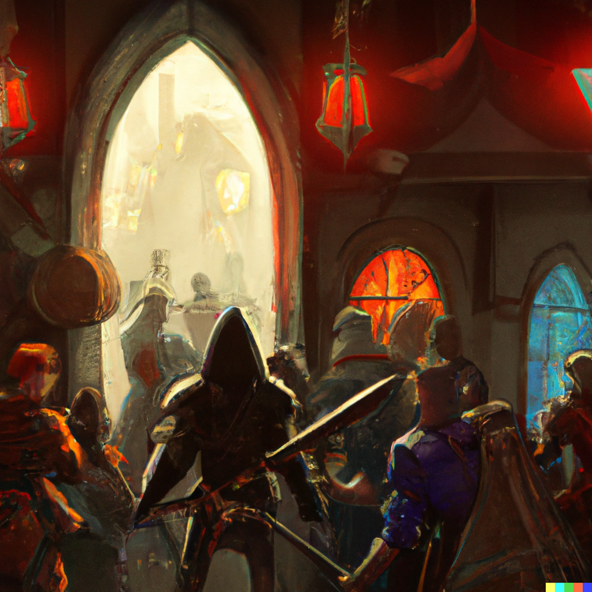
Ninth Session
Finishing Business
Summerday +342 hours
Dramatis Personae
- Benjamin, a 5th-level Elf Ranger
- Calmul Rhoqiroth, a 5th-level Dragonkin Artificer
- CoralKing, a 5th-level Gnome Monk
- Geral Bryn, a 5th-level Human Fighter
- Orky, a 5th-level Half-Elf Paladin
- Steve, a 5th-level Halfling Rogue
- Tasbros, a 5th-level Elf Sorcerer
- Tysnera, a 5th-level Elf Wizard
- Viker, a 5th-level Elf Druid
- Wulrif, a 5th-level Human Warlock
From the journal of Dame Orky
Fourth turn, continued
- Benjamin shoots his bow twice at a soldier and hits! He does 12 damage.
- Calmul shoots at the archer that Benjamin just hit and misses.
- Tysnera found her way back to the group with Tasbros. They walk up the ramp from the tunnel to see the battle scene. She shoots a firebolt at the same archer and misses.
- Wulrif tries to spell magic and other stuff the group is not privy to
- CoralKing runs down the hallway near Viker and dashes to safety.
- Geral leaps inside the south room a few soldiers are in and screams “for the irregulars!!! Orky, that’s what I call us now!” and hits one soldier for 13 damage.
- Orky holds her action.
- Wulrif makes a sword-in-a-stone situation in front of him.
- Tasbros gets out of the pit and tries to deal chromatic orb on a leather-clad man east of the fight, at the mouth of a hallway. He decides poison damage and misses his attack. He then makes everyone within 30 ft of him invisible, somehow. If anyone invisible makes an attack, the spell dissolves on that attacker.
- The bad guys go now…
- A bizarre spell is cast and everyone is visible again.
- b. Geral gets attacked by 4 people in that room. 3 Hits for 15 damage total.
- The southern enemies move west toward our group and the north enemies move east.
- Benjamin gets hit once for 8 HP.
- Steve gets hit for 8 HP.
- Benjamin is hit twice for 8 HP.
- Steve gets hit again for 14 HP.
- Tasbros gets hit by a sword twice for 15 HP.
- Wulrif gets hit for 8 HP, even though he’s in the pit hanging out with the Beholder.
- Tysnera gets hit for 11 HP.
- Tasbros dodges a hit and leans right into another one for 8 HP.
- Steve hits the injured archer for 12 damage and kills him.
Fifth Turn
- Benjamin hits an archer for 13 damage.
- Viker moves her moonbeam to the southern bridge, which was repaired previously. As a bonus action, she uses her unicorn totem (30 ft radius). Her moonbeam, which she dropped on a poor fool, takes 12 damage and dies.
- Calmul hits someone and does some damage?
- Tysnera casts a lightning bolt (100 ft long 5 ft wide) for 33 damage on every person hit. So, death.
- Wulrif hears the screaming from the pit. He casts misty step to rejoin the team. He uses his bonus action to place a hex mark on someone.
- CoralKing holds his action
- Tysnera gets his with magic missiles and takes 10 HP damage.
- Geral swings in his room again and kills the guy closest to him. He screams “CoralKing, I could use some help in here!” and gives him 3 temporary HP
- CoralKing moves into the south room to help Geral. He attacks twice and once misses. He deals 8 HP damage.
- Orky uses vow of enmity and moves to the last guy in the large room and kills him. She turns down the north hallway with the rough terrain and kills the first guy she sees too.
- Tasbros casts a fireball and the enemy wizard reacts and casts a counter spell. He fails, so Tasbros kills scores of men, unfortunately leaving the wizard.
- The enemies’ turn:
- CoralKing skillfully bobs and weaves to take no damage on a few attacks.
- Geral misses some attacks but catches one for 11 damage.
- Tasbros gets hit once for 6 damage. He also gets hit again for 4 damage. The enemies are kind of pissed he roasted their friends.
- Steve shoots his bow and takes out a guy on the south bridge.
Sixth Turn
- Viker is going to heal Tasbros for 13 damage and everyone gets 5 HP of healing. She takes a guy out.
- Benjamin shoots an archer for a critical hit and kills him. He takes aim and misses a shot at another guy.
- Calmul shoots at the remining 3 guys by the central pit and misses.
- Tysnera casts magic missile on those 3 guys and hits them for 8 damage.
- Wulrif eldritch blasts one of the guys and kills him.
- CoralKing uses 3 attacks on a guy and hits all 3 for 32 damage. So, he pulverized him in front of his friends.
- The wizard disappears!!!
- Geral says “well done your highness, go again!” to allow CoralKing to attack again. CoralKing hits one critical and another hit to kill the guy. Geral does some damage on a guy.
- Orky dashes to the south room with Geral and CoralKing
- Tasbros moves to the edge of the pit and poison sprays one of the guys there. He does 9 damage.
- The guy standing in front of Orky exclaims “I surrender M’lady!” and throws his hands up. We take him prisoner. The other guys retreated in haste.
1200 XPs
- Viker heals CoralKing 15 HP and everyone else 5 HP.
- Benjamin uses healing spirit for everyone to walk through. 6 people can walk through it for 1d6 HP healing.
- Benjamin stands guard in case the magician comes back.
- Wulrif joins the group and turns on detect thoughts.
- The group decides what to do with our newfound prisoner and the rest of the castle.
- Orky asks the prisoner: “who else is in the castle?” He responds “no one else, our leader ran off and you slain the rest of us.” Geral said “What about the undead?” He responds: “12 skeletons”. “What about the creature in the pit?” They stay away from the creature in the pit. Tasbros: “Who is your leader?” He responds “Iarno Glassstaff, you are much stronger than him.” Tasbros asks “Where is he going now?” He said “Probably the black spider.” Wulrif detects thoughts and it resembles a drow.
- Orky wants to turn the soldier in to the authorities but allows input from the group. She reaches for her rope to tie him up and he interjects “I’ll turn myself in to the authorities!” and she nods in agreement. He gets up and leads us to the secret door.
- We move to the north secret door, leading to room 7, a storeroom. We see a door opposite the secret door and one to the south. We go through the one closest to us and find an armory. Viker detects magic back toward the pit. Geral finds brand new scalemail and grabs it. No platemail is detected. Viker and Steve grab crossbows. Viker grabs a longsword.
- We revisit the sword-in-the-stone and Viker casts detect magic. She sees an outline of armor buried in the dirt by the sword and an outline of the hilt of the sword. Actius unearths the sword and underneath it is a crypt. There is a sarcophagus in there. This is the burial place of lord Tresendar.
- Wulrif speaks to the beholder kin in his native language. He said he wants to be free after he kills all of us. We decide to leave him alone for now.
- We head to room 4, another series of crypts. There are 12 skeletons that rise up to face us.
Turn 1
- Benjamin hits the bow-wielding skeleton (AC 13) and hits, killing it. He attacks a second one and kills another one.
- Orky kills two
- Tysnera uses ray of frost and does 5 damage.
- Viker uses ice knife, kills one, and kills another 5 within a 10 ft radius.
- CoralKing moves between 2 skeletons and attacks them both at the same time. They are particularly vulnerable to blunt damage (open-handed attacks) so they get dealt double damage. He hits one for 10 damage. He uses a bonus attack to deal another 14 damage, killing it.
- Tasbros uses firebolt for 19 damage, killing it.
- Geral attacks the last one for 6 damage.
- Steve kills the last one!
- We see the room was a crypt full of skeletons. The crypts are empty now, obviously. We see another single door, which is where the townsfolk are being held. Wulrif uses a cantrip to clean everyone up. Geral says “we assume you know how to get home?” they say “oh, yes!” he said “ok, just don’t bother the monster in the basement on your way out.”
- The double doors are a long hallway and Steve detects a pit trap full of spikes. We go to investigate another room Steve finds, that leads us to the wizard’s workshop. Calmul gets excited seeing a bunch of alchemy equipment (Mercury, dragonbile, and nightshade). A dwarvish book is available, Wulrif takes it, and it’s a journal about the history of Phandalin. A secret door is ajar that looks like the way the wizard escaped. A letter has been left, written in common, with a black spider seal on it. A chest is found at the foot of the bed, Viker detects magic within it. Steve uses his crowbar to wedge it open and nearly dodges the poison needle. There are 2 scrolls (fireball and charm person) and Tysnera takes them both. There are a couple of gems (ruby, 5 carnelians, paradots) 180 silver and 130 gold pieces. Those are most of the rooms other than the crevasse.
- The group decides to return to Phandalin, turns the prisoner in, and Sildar asks where Iarno is. We said he fled. We show him the letter and he figures out that Iarno betrayed him. Wulrif asks “Who is the black spider?” and Sildar said he doesn’t know. Iarno used to be a battle mage with Sildar. He was helping Sildar and Gundren to set up the mine in Phandalin. Viker asks if there was a love interest that went sour and Sildar said he doesn’t know of any.
- We take a long rest while Wulrif reads the letter. He finds a forge of spells that describes a magic sword “magic bringer” for Lord Tresendar. He asks about the beholder and finds that it’s a type of guardian that is bound by a ritual. When a beholder is slain, and is rebuilt, this creature is what is created.
- Gundren wants to go to Wave Echo Cave and we agree. Wulrif hands over the journal and recognizes it. We said we found the lord’s crypt. He said his daughter (Aliah - a wizard) probably conjured the beholder. Gundren said the sword (lightbearer) and armor is very valuable and rare.
- We hear a voice along our journey “what are you doing here?” and we look up and see a very large man (30 ft tall) on a cloud staring at us. We state our purpose to travel to Wave Echo Cave. He said if we can activate the spell forge, come back to him and he has a task for us. Geral asks him his name and he responds “Zeus”. We agree and move on.

- We hear a booming echo and we see a cave entrance and hear the ocean. Gundren sees a dwarf body and Gundren gasps and runs toward it. He screams “Thardon!” He turns the body over and sees tiny arrow bolts. Wulrif starts looking at the bolts and they are silvery but crumble in the sunlight. Viker detects magic boots on Thardon’s body. She attempts to pry off the boots and he said “what are you doing? That’s my brother!” She said “…is he using them?” Gundren is taken aback and looks away in hesitant approval. The boots suddenly resize (boots of striding and springing) to her feet.
- We drop down further into the cave and cannot see very far. The spell forge is a place where magic weapons are made. We are looking for that here.
- We decide to head west and it starts becoming a maze of twisty little passages with 6’ high ceilings and several collapsed passageways. We decide to head north. We see a pool with dark water to the west, the shore is full of broken shells and odor. Steps head to the east. Viker detects magic and she sees an outline of something in the pool at the bottom, something small and about 20’ down. Viker turns into an octopus and dives down. She sees a skeleton and grabs a wand of magic missiles off the body. She generously gives it to Tasbros.
- We head forward on the path and encounter a barricaded door. Viker decides to turn into a centipede and try to find what’s on the other side. She sees 10 bugbears on the other side.
- We decide to backtrack down the path and send Steve down the northeastern hallway with Viker on his back. They see a normal, narrow passageway and as we all follow behind, the whole floor and walls start to wrap around and swallow us. We figure out it’s an ogre jelly. It’s basically on a jellyfish’s back. Everyone is surprised except for Benjamin, Viker, and Tysnera. They all get attacked.
First Turn
- Acid damage of 12 for Geral, 8 for Wulrif, 13 for Orky, 16 for CoralKing, 10 damage to Tasbros, 8 to Steve, and Calmul was spared.
- Tysnera casts firebolt
- Benjamin attempts to find its weaknesses and discovers that it’s resistant to acid, immune to slashing, piercing, and lightening. It has no weaknesses.
- Viker uses shalaylay and hits for 10 damage.
Now all those who were surprised can act.
Second Turn
- Tysnera uses ray of frost (AC 8) and does 7 damage.
- Benjamin hits it with his quarterstaff and does 3 damage.
- CoralKing headbutts it, with his feet stuck to deal 20 damage.
- Viker hits it for 13 damage.
- The jelly goes now and hits everyone with 9 points damage. Tysnera gets hit again for 20 HP. 13 damage to someone and 7 to Benjamin. Calmul gets 13 points of damage.
- Tasbros uses chromatic orb for 28 damage.
- Geral commands CoralKing to hit it again. He deals 21 damage.
- Wulrif kills it!